3 loty krajowe+ 2 przejazdy autobusem Calafate–Chaltén (11 i 14 mar, 213 km)
ok. 14 500–16 500 zł · ARS 5 686 000–6 471 000bez lotu międzynarodowego (ok. 5 200–6 500 zł · ARS 2 039 000–2 549 000 osobno); kwota planistyczna projektu, nie suma tabeli budżetu
Ceny i rozkłady się zmieniają. Wszystkie dane zebrano 21 października 2026 r., czyli ok. 4,5 miesiąca przed wyjazdem. Ceny, godziny lotów i autobusów, godziny otwarcia oraz stawki parkowe trzeba sprawdzić ponownie przed każdą rezerwacją. Informacje oznaczone jako do potwierdzenia lub niepotwierdzone pochodzą z jednego, wtórnego lub niedatowanego źródła.
Jak czytać ten przewodnik
Trasa jest ustalona: Buenos Aires → El Calafate (lodowiec Perito Moreno; 2 noce) → El Chaltén (Laguna de los Tres, Laguna Torre; 3 noce, 11–13 mar) → z powrotem do El Calafate (noc 14 mar, bo lot do Bariloche jest rano 15 mar) → Bariloche (jeziora i góry Nahuel Huapi) → Buenos Aires. Priorytety: góry, potem kultura, nocleg w hotelach 4★ (w El Chaltén taka klasa nie istnieje), budżet ok. 15 000 zł · ARS 5 882 000 bez lotu międzynarodowego, a najważniejsze kryterium to bezpieczeństwo.
Terminy uwzględnione w planie
Połowa marca omija Vendimię w Mendozie (4–7 mar) i blok wielkanocny 24–28 mar (24 mar to święto narodowe, Wielkanoc 28 mar 2027). Źródła wtórne.
Poniedziałek: zamknięte Costanera Sur i Rosedal. Wtorek: zamknięte MALBA.
Dni zapasowe: 13 mar (rezerwa w Chaltén na Laguna de los Tres, gdy 12 mar psuje pogoda), 19 mar (pogoda w Bariloche) i 21 mar (bufor przed lotem do domu).
Trzy rzeczy do rozstrzygnięcia na początku
Lot FTE–BRC 15 mar (jedyny bezpośredni) rezerwuj jako pierwszy; widziany rejs 15 mar 10:20 (ok. 968 zł · ARS 380 000 · (oryginał: USD 249)); godzinę i dni tygodnia trzeba potwierdzić.
Plan 11–15 mar: lot o 10:20 jest rano, więc z Chaltén wracasz autobusem już 14 mar i nocujesz w El Calafate (3 noce w Calafate, 3 w Chaltén). Rozkład autobusów w stronę Calafate nieznany – szczegóły w dniach 8–9 oraz w sekcji „Do weryfikacji”.
Ceny noclegów w Bariloche wyszukano dla 18–23 mar, nie dla 15–20 mar.
Mapa trasy
Znaczniki pochodzą wyłącznie z zweryfikowanych współrzędnych OpenStreetMap (plik places.json). Obiekty bez współrzędnych (np. Mirador de las Águilas, Ayres de Calafate, Radisson Blu, Magnolia i inne noclegi w Buenos Aires) znajdziesz w sekcjach tekstowych. Znacznik z przerywanym obrysem oznacza niską pewność pozycji, z jasną obwódką – położenie przybliżone (środek obiektu). Kliknij dzień, aby przybliżyć mapę.
cal_moreno_glacier: srodek calej relacji lodowca ok. 20 km od czola; plik places_check: nie uzywac jako pinu
cal_mirador_aguilas: brak wspolrzednych (null)
lod_ayres_de_calafate: brak wspolrzednych (null)
lod_radisson_blu_bariloche: brak wspolrzednych (null)
lod_casasur_palermo: niedopasowana nazwa w OSM (Casasur Bellini), pewnosc niska
Plan dzień po dniu (7–22 marca)
Zmiana planu 11–15 mar (zatwierdzona). Jedyny widziany lot FTE–BRC 15 mar odlatuje o 10:20, czego nie da się osiągnąć porannym autobusem z El Chaltén. Dlatego: 11 mar autobus do Chaltén, 12 mar Laguna de los Tres, 13 mar Laguna Torre albo rezerwa na Laguna de los Tres, 14 mar autobus do El Calafate i wolne popołudnie, 15 mar lot do Bariloche. Noce: Calafate 9, 10 i 14 mar (3), Chaltén 11–13 mar (3). Loma del Pliegue Tumbado nie jest już dniem planu, tylko opcją na dzień rezerwowy.
Szesnaście dat kalendarzowych: 7 mar to wylot z Polski, a 8–22 mar to 15 dni w Argentynie (14 nocy). Godziny lotów i autobusów to próbki z wyszukiwarek z 21.10.2026 lub szacunki i wymagają potwierdzenia. Ceny są przeliczane w przeglądarce po średnich kursach NBP (pasek „Kursy NBP” na górze: waluta główna PLN, ARS, USD lub EUR); bez połączenia z NBP obowiązują kursy awaryjne z 21.10.2026. Kwota z „ok.” jest przeliczona, bez „ok.” – podana w oryginale.
wg biletuLot z Warszawy do Buenos Aires (EZE) z jedną przesiadką; brak lotu bezpośredniego (Skyscanner, 21.10.2026).
ważneWybierz rejs, który ląduje rano 8 marca (próbki: Lufthansa przez FRA 18:35–07:55+1, KLM przez AMS 16:55–07:45+1, LOT+ITA przez FCO 16:10–08:50+1). Rejs Air France przez CDG ląduje wieczorem 7 marca, czyli wymagałby dodatkowej nocy w Buenos Aires.
Transport
Próbki Google Flights z 21.10.2026 (WAW–Buenos Aires, 7–22 mar 2027, bilet w dwie strony, na osobę): Air France przez CDG – 5 797 zł · ARS 2 273 000; LOT+ITA przez FCO – 5 843 zł · ARS 2 291 000; KLM przez AMS – 6 003 zł · ARS 2 354 000; Lufthansa przez FRA – 6 516 zł · ARS 2 555 000; najtańsze: TAP przez LIS+GRU (32 h 20 min) – 5 439 zł · ARS 2 133 000, Turkish przez IST+GRU (40 h 50 min) – 5 162 zł · ARS 2 024 000. Google oceniał ceny jako „typowe”. KTW nie sprawdzano: brak danych.
Koszt (szacunek)
Lot międzynarodowy ok. 5 200–6 500 zł · ARS 2 039 000–2 549 000poza budżetem 15 000 zł · ARS 5 882 000. do potwierdzenia
Pogoda i plan B
Dzień podróży.
Bezpieczeństwo
Dokumenty w bagażu podręcznym, kopia paszportu osobno. Paszport ważny co najmniej 6 miesięcy po powrocie (zalecenie ostrożnościowe, patrz „Bezpieczeństwo”).
Rezerwacje
Bilet międzynarodowy – według Google najtaniej zwykle do 6 miesięcy przed wylotem (źródło: Google Flights, 21.10.2026).
Kulinaria dnia
Brak pozycji.
8marponiedziałek
Dzień 2: Przylot i miękkie lądowanie w Buenos Aires
Buenos Aires (noc 1)
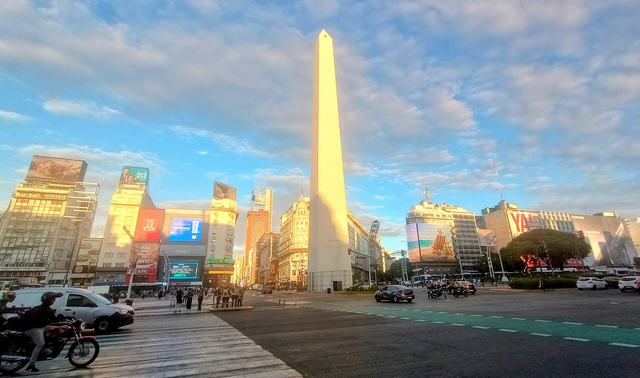
Plan
ranoLądowanie w EZE (godzina zależy od rejsu, do potwierdzenia). Transfer do hotelu w Palermo – ok. 40 min (opis Magnolia na Booking).
po południuOdpoczynek po locie, krótki spacer po Palermo w dzień. Poniedziałek: zamknięte są Costanera Sur i Rosedal – nie planuj ich dziś.
wieczórWczesna kolacja blisko hotelu; wieczorem tylko taksówka z aplikacji lub radio-taxi.
Transport
Najbezpieczniej: transfer zarezerwowany z góry (od ok. 187 zł · od ARS 73 000 · (oryginał: od USD 48), czerwiec 2026, z opłatami drogowymi) lub stanowisko Tienda León w hali przylotów (autobus ok. 31–35 zł · ARS 12 000–14 000 · (oryginał: USD 8–9), dane z przewodnika zewnętrznego) niepotwierdzone.
Stanowisko Taxi Ezeiza: stała taryfa ok. 128 zł · ARS 50 000 według tablicy ze zdjęcia na blogu z 3.04.2026; przyjmują gotówkę, USD/EUR, karty z 10% dopłatą. Cena do marca 2027 się zmieni niepotwierdzone.
Nie korzystaj z naganiaczy w hali przylotów (MSZ, FCDO).
Koszt (szacunek)
Transfer ok. 35–187 zł · ARS 14 000–73 000 · (oryginał: USD 9–48); nocleg: nie sprawdzano cen na 8–9 mar (brak danych) – szacunek na podstawie 20–22 mar: ok. 362–727 zł · ARS 142 000–285 000 · (oryginał: USD 93–187). do potwierdzenia
Pogoda i plan B
Koniec lata: dzienne maksima ok. 25–26 °C, wilgotno, możliwe burze (strony komercyjne, nie dane SMN). W razie ulewy: spokojny dzień w hotelu i kawiarni.
Bezpieczeństwo
Pierwsza doba po długim locie: unikaj gotówki w ręku, telefon chowaj na krawężniku (zrywanie telefonów z motocykli), torba z przodu. Dokumenty w sejfie hotelowym, przy sobie kopia.
Rezerwacje
Nocleg 8–9 mar (wybierz stawkę z darmową anulacją, bo cen nie sprawdzano); transfer z EZE – rezerwacja przy zakupie biletów.
Kulinaria dnia
Parrilla / asado (bife de chorizo) – Don Julio lub La Cabrera (Palermo) – stolik rezerwuj z dużym wyprzedzeniem; po zmroku wracaj taksówką z aplikacji
Empanadas – tani, szybki posiłek na pierwszy wieczór
9marwtorek
Dzień 3: Przelot do El Calafate
El Calafate (noc 1)
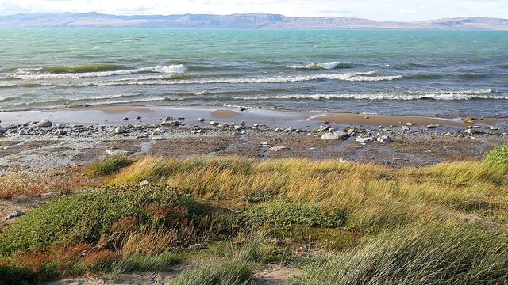
Plan
ranoWymeldowanie, transfer na lotnisko. Warianty z próbek Google Flights: JetSMART EZE–FTE 04:45–08:01 lub 15:04–18:20 (3 h 16 min); Aerolíneas z AEP 11:45–15:05 (3 h 20 min) – godziny i lotnisko do potwierdzenia.
po przylocieTaksówka z lotniska (ok. 20 min) do hotelu, zameldowanie. Spacer po Av. Libertador, zakupy na szlaki (w El Calafate wybór większy niż w Chaltén).
wieczórKolacja; wczesne spanie przed wyprawą do lodowca.
Transport
Lot EZE–FTE 9 mar 2027 (Google Flights, 21.10.2026, tylko jedna data): JetSMART ok. 233 zł · ARS 92 000 · (oryginał: USD 60) i ok. 369 zł · ARS 145 000 · (oryginał: USD 95); Aerolíneas ok. 611–1 360 zł · ARS 239 000–532 000 · (oryginał: USD 157–349) (rejs 11:45 z AEP: ok. 696 zł · ARS 273 000 · (oryginał: USD 179)). do potwierdzenia
Bagaż: Aerolíneas od maja 2026 – taryfa Base zawiera tylko 3 kg bagażu osobistego; bagaż rejestrowany online ok. 133 zł · ARS 52 030 (strefa Sur) za odcinek, limit 15 kg (prasa/blogi, nie strona linii) niepotwierdzone.
Taxi Condor z lotniska: ok. 92 zł · ARS 36 000, ok. 20 min (aeropuertosdelmundo, stan z 1.05.2026).
Różnice lotnisk: JetSMART lata z EZE, Aerolíneas głównie z AEP. Sprawdź lotnisko na każdym bilecie na 2 tygodnie przed lotem.
Koszt (szacunek)
Lot EZE–FTE: pełny zakres próbek ok. 233–1 360 zł · ARS 92 000–532 000 · (oryginał: USD 60–349): JetSMART ok. 233–369 zł · ARS 92 000–145 000 · (oryginał: USD 60–95), Aerolíneas ok. 611–1 360 zł · ARS 239 000–532 000 · (oryginał: USD 157–349); w budżecie przyjęto ok. 233 zł · ARS 92 000 · (oryginał: USD 60) (niski) – ok. 696 zł · ARS 273 000 · (oryginał: USD 179) (wysoki, rejs 11:45 z AEP). Do tego bagaż ok. 133 zł · ARS 52 030 + taxi ok. 92 zł · ARS 36 000; nocleg Calafate: ok. 559–951 zł · ARS 219 000–373 000 · (oryginał: EUR 128–218) za noc, ceny z 9–11 mar 2027.
Pogoda i plan B
Marzec to jesień: dziennie ok. 13 °C, noce ok. 6 °C, wietrznie (agregator pogody, nie SMN) niepotwierdzone.
Bezpieczeństwo
Na tym etapie rozstrzyga niezawodność: w lutym 2026 strajk generalny skasował 255 lotów Aerolíneas i wszystkie JetSMART. Na etapy patagońskie wybieraj Aerolíneas. Nie planuj ciasnych połączeń.
Rezerwacje
Bilety EZE–FTE oraz bagaż rejestrowany; nocleg w Calafate na trzy noce (9, 10 i 14 mar; 11–13 mar spędzasz w Chaltén); jeśli planujesz minitrekking – rezerwacja z kilkumiesięcznym wyprzedzeniem (patrz dzień 4).
Kulinaria dnia
Cazuela de cordero / gnocchi – El Cucharón (12–15 i 19–23 codziennie wg Wanderlog)
Cordero patagónico al asador – Isabel Cocina al Disco (ocena Google 4,6) lub La Tablita
10marśroda
Dzień 4: Lodowiec Perito Moreno, pasarelas
El Calafate (noc 2)
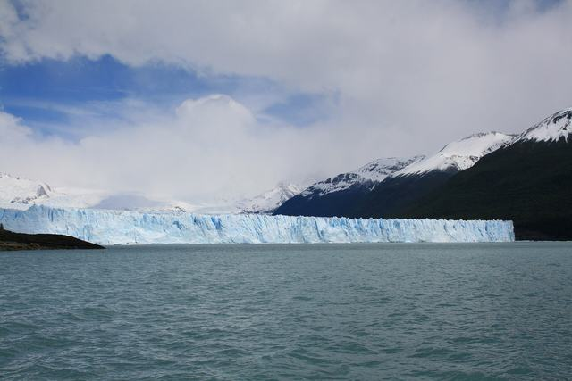
Plan
ok. 8:00Wyjazd do Parku Narodowego Los Glaciares (ok. 80 km od miasta, własny autobus lub wycieczka; ceny i rozkład nieznane).
do ok. 14:00Pasarelas (kładki) nad czołem lodowca: samodzielnie, ok. 4–5 h z dojazdami. Podłoga kładek z metalowej kratownicy. Godziny w marcu: nieznane (starszy artykuł: 6:30–20:00 latem) – do potwierdzenia.
opcjonalnieMinitrekking z Hielo&Aventura (jedyny koncesjonariusz trekkingu po lodzie): ok. 10 h z transferem, ok. 4 h na lodowcu. Wiek: regulamin 8–65, strona produktu 12–60 – sprzeczność, sprawdź. Nie dla osób z problemami z sercem lub plecami.
Transport
Minitrekking od ok. 816 zł · od ARS 320 000 (do ok. 979 zł · ARS 384 000 z transferem; Canal 26, 28.05.2026); rejs „Safari Azul” od ok. 163 zł · od ARS 64 000 (2025, dane z datą) niepotwierdzone. Ceny na 2027 nieznane; źródło sugeruje wzrost o 30–60% (domysł).
Koszt (szacunek)
Opłata parkowa: ok. 64 zł · ARS 25 000 w kolumnie „General”; strona APN wymienia Perito Moreno wśród miejsc, gdzie opłata jeszcze nie obowiązuje, a serwisy wycieczkowe piszą o płatności na miejscu w pesos niepotwierdzone. Dojazd: cena nieznana.
Pogoda i plan B
Plan B przy złej pogodzie: muzeum Glaciarium (nieweryfikowane) lub odpoczynek; kładki mogą być zamykane przy silnym wietrze (brak danych w źródłach).
Bezpieczeństwo
Kładki mają metalową kratownicę – wygodne buty. Nigdy nie wchodź na lód poza ofertą licencjonowanego operatora.
Rezerwacje
Minitrekking i Big Ice: Hielo&Aventura, rezerwacja 2–3 miesiące wcześniej (szacunek). Sezon: minitrekking 15.08–31.05, Big Ice 15.09–30.04 – w marcu działa.
Kulinaria dnia
Cordero patagónico – La Tablita lub Parrilla Don Pichón (bezpłatny transfer z hotelu)
Lody i dżem z jagód calafate – legenda: kto zje calafate, wróci do Patagonii; w marcu owoce mogą być już po sezonie (źródła różnią się)
11marczwartek
Dzień 5: Autobus do El Chaltén i spacer rozgrzewkowy
El Chaltén (noc 1)
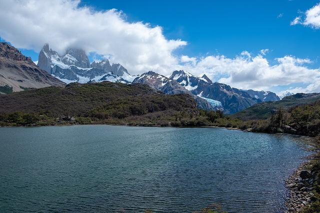
Plan
ranoAutobus z terminalu w El Calafate do El Chaltén: 213 km, ok. 2 h 40 min – 3 h. Odjazdy zgłaszane z terminalu w El Calafate (kierunek Chaltén): Marga Taqsa 8:00, 10:00, 12:30; Cal Tur 8:00 i 17:00 (checkmybus); Chaltén Travel 11:00 (k3 loty_transport) albo 8:00, 12:00, 14:30, 18:00, 20:00 (blog, niedatowany; k3 calafate_chalten) – wersje sprzeczne. Rozkładu w kierunku Chaltén → Calafate w źródłach nie ma; marzec 2027 nieznany. do potwierdzenia
po zameldowaniuRejestracja w Centro de Visitantes (południowy kraniec miasteczka). Spacer na Mirador de los Cóndores (ok. 20 min) i Mirador de las Águilas (ok. 45 min), przewyższenie ok. 100 m. Opcjonalnie wodospad Chorrillo del Salto (3 km, ok. 40 min, płasko).
wieczórZakupy na kolejne dni (w Chaltén drożej i skromniej), wczesna kolacja. Sprawdź prognozę na 12 mar (Laguna de los Tres).
Transport
Autobus Calafate → Chaltén. Cena w jedną stronę – źródła się rozjeżdżają: checkmybus ok. 121 zł · ARS 47 000 · (oryginał: USD 31) (Taqsa), ok. 163 zł · ARS 64 000 · (oryginał: USD 42) (Cal Tur), ok. 175 zł · ARS 69 000 · (oryginał: USD 45) (Chaltén Travel), lipiec–październik 2026 (FAQ tego serwisu: ok. 194 zł · ARS 76 000 · (oryginał: USD 50)); Rome2Rio ok. 120–140 zł · ARS 47 000–55 000 (k3 loty_transport) albo ok. 89–105 zł · ARS 35 000–41 000 (k1 patagonia_sur i k3 calafate_chalten, niedatowane); elchalten.com ok. 61 zł · ARS 24 000 + ok. 5 zł · ARS 2 000 opłaty gminnej (stan z marca 2024) – łącznie ok. 61–140 zł · ARS 24 000–55 000. do potwierdzenia
Koszt (szacunek)
Autobus w jedną stronę: ok. 121–194 zł · ARS 47 000–76 000 · (oryginał: USD 31–50) wg checkmybus, ok. 61–140 zł · ARS 24 000–55 000 wg pozostałych źródeł (patrz Transport) do potwierdzenia; nocleg Chaltén: Kau Si Aike ok. 659 zł · ARS 258 000 · (oryginał: EUR 151), ceny z 12–14 mar 2027 (11 mar nie sprawdzano).
Pogoda i plan B
Wiatr i szybkie zmiany pogody są normą. Wieczorem sprawdź prognozę: 12 mar to Laguna de los Tres (najbardziej zależna od pogody); jeśli na 12 mar zapowiada się źle, zamień 12 i 13 mar miejscami.
Bezpieczeństwo
Brak sygnału komórkowego na szlakach; rejestracja i informacja o planie dla hotelu. W miasteczku przestępczość niska (travelsafe-abroad). Uwaga: w El Chaltén nie ma prawdziwych hoteli 4★.
Rezerwacje
Bilet autobusowy – kup kilka dni wcześniej na stronach przewoźników (caltur.com.ar, chaltentravel.com, taqsa.com.ar); noclegi na noce 11, 12 i 13 mar (wymeldowanie 14 mar).
Kulinaria dnia
Pizza (Patagonicus) – tylko gotówka wg Frommer's (bez daty); Güemes 54
Zupa z soczewicy – Ahonikenk (Güemes 23)
12marpiątek
Dzień 6: Laguna de los Tres (Fitz Roy)
El Chaltén (noc 2)
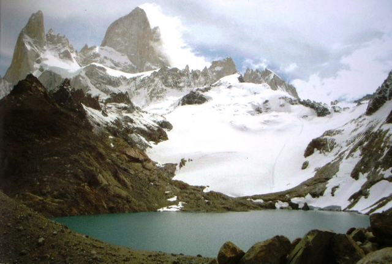
Plan
ok. 6:30Start ze szlaku (z miasteczka lub od Río Eléctrico – ten dojazd to ok. 16 km RP41).
przebiegok. 10 km w jedną stronę, ok. 4 h, przewyższenie ok. 750 m; razem ok. 20 km, 8–10 h. Ostatni odcinek (ok. 1 h) najbardziej stromy i bardzo wietrzny (broszura APN z grudnia 2017).
decyzjaZawracaj, jeśli wieje mocno, jest mgła lub śnieg/lód; nie idź w górę późnym popołudniem.
wieczórJeśli pogoda była zła i nie doszedłeś do jeziora: jutro (13 mar) dzień rezerwowy na Laguna de los Tres.
Transport
Pieszo; ewentualny transfer do Río Eléctrico (operatorzy nieznani).
Koszt (szacunek)
Bilet na szlaki Chaltén: online w APN (cena biletu nieznana, nie mylić z opłatą parkową). Opłata parkowa Los Glaciares: ok. 128 zł · ARS 50 000 za dzień, Flexipass 3 dni ok. 255 zł · ARS 100 000, 7 dni ok. 448 zł · ARS 175 500 – stan od 1.06.2026, do marca 2027 prawdopodobnie wzrośnie. Stawka „General” – zakładamy, że dotyczy cudzoziemców; do potwierdzenia.
Pogoda i plan B
Najbardziej wymagający i najbardziej zależny od pogody szlak planu, dlatego idzie pierwszy; 13 mar pełni funkcję zapasową (powtórka Laguna de los Tres albo Laguna Torre).
Bezpieczeństwo
Główne ryzyka według travelsafe-abroad: wiatr, nagła zmiana pogody, stromy i odsłonięty ostatni kilometr, przeprawy przez rzeki po deszczu, izolacja. Na szlaku często są inni turyści, ale ratownictwo jest oparte na radiu i długich czasach ewakuacji. Szpital dopiero w El Calafate. Ciepła warstwa, czołówka, mapa offline, power bank; powiedz w hotelu, o której wrócisz.
Rezerwacje
Bilet na szlaki (portal Base Fitz Roy lub Río Eléctrico) kup z wyprzedzeniem – termin graniczny nieznany. Rejestracja w Centro de Visitantes; prognoza przed wyjściem.
Kulinaria dnia
Sorrentinos z dyni – Estepa Resto Bar
Piwo rzemieślnicze – Don Guerra; La Cervecería Chaltén pominięta – oznaczona jako tymczasowo zamknięta
13marsobota
Dzień 7: Laguna Torre (lub rezerwa na Laguna de los Tres)
El Chaltén (noc 3)
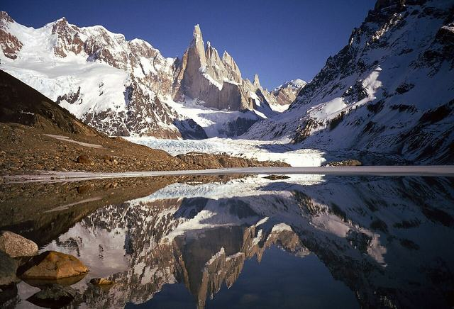
Plan
pogoda 12 mar dobraLaguna Torre z Cerro Torre. Ok. 7:30 wyjście z miasteczka na szlak do Laguna Torre (portal Base Fitz Roy).
przebiegok. 9–11 km w jedną stronę, ok. 3 h, przewyższenie ok. 250–300 m, w większości łagodnie; razem ok. 18–22 km, 6–8 h (źródła wtórne, niepotwierdzone).
pogoda 12 mar złaDzień rezerwowy: idziesz na Laguna de los Tres (opis w dniu 6: ok. 10 km w jedną stronę, ok. 750 m w górę), a Laguna Torre odpada albo idzie na inny dzień, jeśli się mieści.
opcjaPrzy dobrej prognozie i zapasie sił zamiast Laguna Torre możesz rozważyć Loma del Pliegue Tumbado (wejście od portalu Los Cóndores): ok. 10 km w jedną stronę, ok. 1000 m w górę; widok na Fitz Roy i Torre jednocześnie. Raport turysty: ok. 2 h 45 min w górę, ok. 20 km razem (niepotwierdzone). Na szczycie idź za żółtymi palikami. To tylko alternatywa, nie punkt planu.
po południuPowrót przed zmrokiem; wieczorem spakuj się: jutro (14 mar) autobus do El Calafate.
Transport
Pieszo z miasteczka; transport nie jest potrzebny.
Koszt (szacunek)
Bilet na szlaki + opłata parkowa jak 12 mar (3 dni po ok. 128 zł · ARS 50 000 to ok. 383 zł · ARS 150 000, Flexipass na 3 dni kosztuje ok. 255 zł · ARS 100 000). Stawka „General” – zakładamy, że dotyczy cudzoziemców; do potwierdzenia.
Pogoda i plan B
Dzień zależny od pogody z 12 mar: jeśli 12 mar się udało, to zwykły dzień na Laguna Torre; jeśli nie, to rezerwa na Laguna de los Tres. Nie ma kolejnego dnia zapasowego (14 mar to autobus, 15 mar lot).
Bezpieczeństwo
Ciepła warstwa, czołówka, mapa offline, power bank; zalecany komunikator satelitarny (rekomendacja, nie wymóg). Wróć przed zmrokiem; powiedz w hotelu, o której wrócisz. Brak sygnału komórkowego na szlakach. Jeśli wybierzesz Pliegue Tumbado: współrzędne na mapie to SZCZYT (nie początek szlaku), szlak średni–trudny, zawracaj w wietrze i we mgle.
Rezerwacje
Jak 12 mar (bilet na szlaki, rejestracja). Kup bilet autobusowy Chaltén → Calafate na 14 mar, jeśli jeszcze go nie masz.
Kulinaria dnia
Jagnięcina lub pstrąg – La Tapera (José A. Rojo 50)
Wypieki na szlak – Panadería Lo de Haydee (empanady, viandas – ok. 39 zł · ARS 15 000 · (oryginał: USD 10), bez daty)
Kawa i gofry – La Waflería (status do sprawdzenia)
14marniedziela
Dzień 8: Autobus do El Calafate i wolne popołudnie
El Calafate (noc 3)
Plan
ranoAutobus El Chaltén → El Calafate: 213 km, ok. 2 h 40 min – 3 h. Rozkładu w tę stronę nie znaleziono w źródłach; wybierz poranny kurs, żeby mieć zapas czasu. Odjazdy zgłaszane z terminalu w El Calafate (kierunek Chaltén): Marga Taqsa 8:00, 10:00, 12:30; Cal Tur 8:00 i 17:00 (checkmybus); Chaltén Travel 11:00 (k3 loty_transport) albo 8:00, 12:00, 14:30, 18:00, 20:00 (blog, niedatowany; k3 calafate_chalten) – wersje sprzeczne. Rozkładu w kierunku Chaltén → Calafate w źródłach nie ma; marzec 2027 nieznany. do potwierdzenia
po przyjeździeZameldowanie w Calafate (ta sama okolica co 9–10 mar – patrz sekcja Noclegi).
popołudnieWolny czas w mieście: spacer po Av. Libertador i zakupy; jeśli chcesz zarezerwować lub dopytać o minitrekking, biuro Hielo&Aventura jest przy Av. del Libertador 935. Przy złej pogodzie: muzeum Glaciarium (nieweryfikowane).
wieczórWczesna kolacja i spakowanie; jutro lot o 10:20, więc taksówka na lotnisko rano. Sprawdź, o której zamawiasz taksówkę.
Transport
Autobus Chaltén → Calafate. Cena w jedną stronę – źródła się rozjeżdżają: checkmybus ok. 121 zł · ARS 47 000 · (oryginał: USD 31) (Taqsa), ok. 163 zł · ARS 64 000 · (oryginał: USD 42) (Cal Tur), ok. 175 zł · ARS 69 000 · (oryginał: USD 45) (Chaltén Travel), lipiec–październik 2026 (FAQ tego serwisu: ok. 194 zł · ARS 76 000 · (oryginał: USD 50)); Rome2Rio ok. 120–140 zł · ARS 47 000–55 000 (k3 loty_transport) albo ok. 89–105 zł · ARS 35 000–41 000 (k1 patagonia_sur i k3 calafate_chalten, niedatowane); elchalten.com ok. 61 zł · ARS 24 000 + ok. 5 zł · ARS 2 000 opłaty gminnej (stan z marca 2024) – łącznie ok. 61–140 zł · ARS 24 000–55 000. do potwierdzenia
Taxi na lotnisko FTE na 15 mar rano: Taxi Condor ok. 92 zł · ARS 36 000, ok. 20 min (aeropuertosdelmundo, stan z 1.05.2026; podana trasa lotnisko → miasto, tu przyjęto ten sam poziom) niepotwierdzone.
Koszt (szacunek)
Autobus w jedną stronę ok. 121–194 zł · ARS 47 000–76 000 · (oryginał: USD 31–50) wg checkmybus, ok. 61–140 zł · ARS 24 000–55 000 wg pozostałych źródeł do potwierdzenia; nocleg Calafate (3. noc): ok. 559–951 zł · ARS 219 000–373 000 · (oryginał: EUR 128–218) wg wyszukiwania na 9–11 mar – ceny na 14 mar nie sprawdzano; wolne popołudnie bez pozycji sztywnych.
Pogoda i plan B
Plan B przy złej pogodzie: muzeum Glaciarium (nieweryfikowane) lub odpoczynek.
Bezpieczeństwo
Dzień przed lotem: nie wyznaczaj niczego, co wymaga późnego powrotu. Kurs autobusu wybierz tak, by dotarł do Calafate przed zmrokiem (rozkład powrotny nieznany; sprawdź ostatni odjazd).
Rezerwacje
Bilet autobusowy Chaltén → Calafate (kilka dni wcześniej, strony przewoźników); nocleg w Calafate na noc 14 mar (z darmową anulacją); taksówka na lotnisko na 15 mar rano.
Kulinaria dnia
Piwo rzemieślnicze i burgery – La Zorra Taproom (Calafate)
Empanadas z jagnięciny – łatwa kolacja lub lunch; ok. 16–27 zł · ARS 6 100–11 000 · (oryginał: USD 4–7) za 2–3 sztuki (Patagonia, marzec 2026)
15marponiedziałek
Dzień 9: Lot z El Calafate do Bariloche
Bariloche (noc 1)
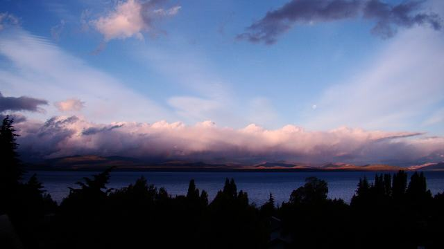
Plan
ranoTaksówka z hotelu w Calafate na lotnisko FTE (ok. 20 min). Lot bezpośredni Aerolíneas FTE–BRC o 10:20, przylot 12:05 (ok. 1 h 45 min); godzinę i dzień tygodnia trzeba potwierdzić przed zakupem. Zapas czasu na odprawę i bagaż rejestrowany – moje założenie, bez źródła.
po przylocieAutobus Linea 72 z lotniska do centrum (ok. 30 min, niepotwierdzone), zameldowanie, spacer: Centro Cívico i nabrzeże.
dziś!Rejestracja trekkingowa na Cerro López (17 mar) – reguła „co najmniej 48 h wcześniej” pochodzi z jednej wiadomości z 2024 r.; zrób to z wyprzedzeniem.
Transport
Lot FTE–BRC 15 mar: ok. 968 zł · ARS 380 000 · (oryginał: USD 249) (jedyny lot na liście); alternatywa JetSMART z dwoma przesiadkami (27 h 07 min, ok. 863 zł · ARS 339 000 · (oryginał: USD 222)) odradzana. Bez lotu bezpośredniego: przez Buenos Aires, 8–12 h i dwa bilety. Cenę i godzinę trzeba potwierdzić. do potwierdzenia
Taxi Condor FTE: ok. 92 zł · ARS 36 000niepotwierdzone. Linea 72 w Bariloche: ok. 16 zł · ARS 6 264 (luty 2026); w marcu 2027 drożej. Odbiór z lotniska: remises przy przylotach – uzgodnij cenę przed jazdą.
Koszt (szacunek)
Lot ok. 968 zł · ARS 380 000 · (oryginał: USD 249) (+ bagaż ok. 133 zł · ARS 52 030) + taxi w Calafate ok. 92 zł · ARS 36 000 + bilet Linea 72; nocleg Bariloche – ceny wyszukane dla 18–23 mar, nie dla 15–20 mar.
Pogoda i plan B
Bariloche w marcu: średnio 5/16 °C, duże wahania (np. w marcu 2026: od 25 do 13 °C w kilka dni).
Bezpieczeństwo
Dzień wrażliwy na opóźnienia (strajki, wiatr w Patagonii). Nie wyznaczaj niczego krytycznego na wieczór. Poprzedniego dnia jesteś już w Calafate, więc autobus z Chaltén nie zagraża lotowi.
Rezerwacje
PIERWSZA rezerwacja do zrobienia: lot FTE–BRC na 15 mar. Rejestracja trekkingowa Nahuel Huapi (bezpłatna).
Kulinaria dnia
Milanesa napolitana – La Fonda del Tío (Mitre 1130) – duże porcje, zapytaj o połowę
Czekolada – pierwszy rzut oka na Rapanui lub Mamuschka (Mitre 202 i 298)
16marwtorek
Dzień 10: Circuito Chico i Cerro Campanario (+ Llao Llao)
Bariloche (noc 2)
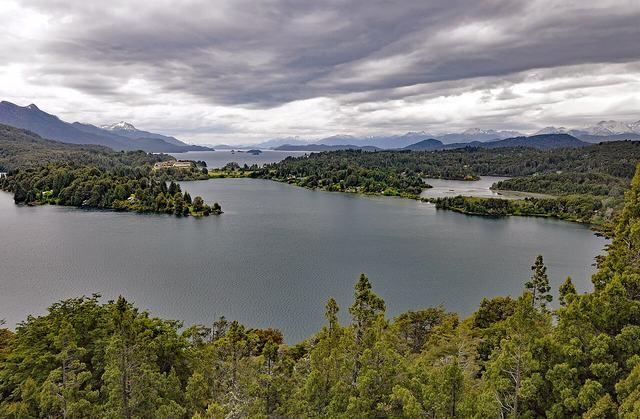
Plan
9:00Linea 20 (centrum – Llao Llao) wzdłuż Circuito Chico (pętla ok. 60 km; samochodem lub wycieczką 3–5 h).
przedpołudnieCerro Campanario: wejście ok. 30 min (ok. 280 m w górę) lub wyciąg krzesełkowy ok. 7 min (cena nieznana).
południeLlao Llao: krótkie spacery (Cerrito); miejskie ścieżki Llao Llao zamykane są przy wietrze.
po południuPowrót Linea 20; wieczorem spacer po centrum.
Transport
Autobusy miejskie: SUBE wymagane. Taryfy z lutego 2026: odcinki I–III ok. 5 zł · ARS 2 045,71; IV ok. 8 zł · ARS 2 966,48; VII–VIII ok. 12 zł · ARS 4 568,27; ceny linii 10/20/51 nieznane; orientacyjnie ok. 5–8 zł · ARS 2 000–3 000 za przejazd. W 2027 będzie drożej.
Koszt (szacunek)
Opłata Nahuel Huapi: ok. 89 zł · ARS 35 000/dzień, druga doba w 72 h –50%; Flexipass 3 dni ok. 179 zł · ARS 70 000 – stawki „General” z 1.06.2026, 2027 nieznane niepotwierdzone.
Pogoda i plan B
Plan B: muzea, czekolada, teleferyk na Cerro Otto (dorosły ok. 153 zł · ARS 60 000, niedatowane, niepotwierdzone; czynny ok. 10–16:30 pn–sb).
Bezpieczeństwo
Bardzo bezpieczny wariant. Samochody: kradzieże z aut w Bariloche są częste (FCDO) – nic w zaparkowanym aucie.
Rezerwacje
Nic obowiązkowego; opłata parkowa przy wejściu/na miejscu.
Kulinaria dnia
Hamburger z jagnięciny lub jelenia – Belek (Ada María Elflein 13)
Wędliny wędzone – Carnero (J. J. Paso 132) – mały lokal
17marśroda
Dzień 11: Cerro López i Refugio López
Bariloche (noc 3)
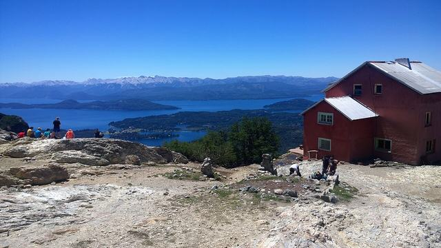
Plan
ok. 8:00Początek szlaku: Linea 10 (Colonia Suiza) lub Linea 20 + colectivo 13.
do ok. 11:00Do Refugio López ok. 4 km, ok. 3 h; brak mostu na Arroyo López – możliwy bród.
opcjonalniePico Turista (2060 m): ok. 1260 m w górę, ok. 5,8 km, +ok. 3 h od schroniska – tylko przy dobrej pogodzie, bez wiatru i chmur.
do 17:00Zejście i powrót autobusem.
Transport
Linea 10 lub 20 + colectivo 13; ceny nieznane (osobne taryfy dla linii). Dojazd do Colonia Suiza: punkt na mapie ma pozycję przybliżoną (środek miejscowości).
Koszt (szacunek)
Opłata parkowa jak 16 mar. Schronisko López (prywatne) – ceny z grudnia 2024: nocleg ok. 77 zł · ARS 30 000, kolacja ok. 61 zł · ARS 24 000, pełne wyżywienie ok. 158 zł · ARS 62 000; od tego czasu pewnie ok. 2×. niepotwierdzone
Pogoda i plan B
Szlak ocenia się jako średni w styczniu–marcu. Przy wietrze i mgle nie schodź ze ścieżki, zawracaj. Plan B: Isla Victoria także zależy od pogody, więc użyj muzeum lub spa.
Bezpieczeństwo
Rejestracja jest obowiązkowa (bezpłatna); nieujęte w rejestrze szlaki traktuj jako zamknięte. Wg władz parku samotne wędrowanie nie jest zalecane. Nie rób wariantów trasy – za niezgodność z zadeklarowaną trasą grożą kary. Lawina na Cerro López we wrześniu 2024 (poza sezonem).
Rezerwacje
Rejestracja online (bezpłatna) co najmniej 48 h wcześniej; sprawdź aktualny link na stronie parku. Nocleg w schronisku opcjonalny – kanał rezerwacji nieznany.
Kulinaria dnia
Trucha – świeża lub wędzona – jedno z regionalnych dań Bariloche
Picada z ciervo i jabalí ahumados – wędzony jeleń i dzik – ocena regionalna (argentina.travel)
18marczwartek
Dzień 12: Isla Victoria i Arrayanes (albo Villa La Angostura)
Bariloche (noc 4)
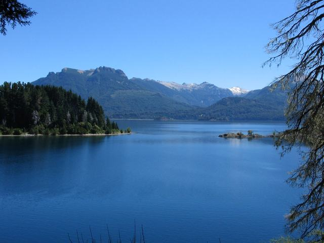
Plan
ranoRejs z Puerto Pañuelo: wycieczka Isla Victoria + las arrayanes, ok. 6 h.
uwagaSzlak Arrayanes (12 km) otwarto ponownie w lipcu 2026 jako pieszy; w październiku 2026 trwały tam prace – sprawdź stan.
alternatywaVilla La Angostura i Ruta de los Siete Lagos: ok. 107–115 km, ok. 2 h jazdy; brak regularnego autobusu – wycieczka 9–10 h lub samochód.
Transport
Rejs/wycieczka: Civitatis od ok. 362 zł · od ARS 142 000 · (oryginał: od USD 93) + opłata parkowa (niedatowane); inna oferta: opłata parkowa ok. 89 zł · ARS 35 000 + wejście na pokład ok. 11 zł · ARS 4 300, gotówka (Nomades, niedatowane) niepotwierdzone.
Wypożyczenie auta (jeśli wybierzesz Siete Lagos): prawo jazdy z kraju + paszport; zalecane IDP; kaucja ok. 2 330–5 830 zł · ARS 915 000–2 288 000 · (oryginał: USD 600–1 500); wiek 21+ (młody kierowca poniżej 25 lat – dopłata). Cena dzienna nieznana.
Koszt (szacunek)
Wycieczka od ok. 362 zł · od ARS 142 000 · (oryginał: od USD 93); opłata parkowa od ok. 89 zł · od ARS 35 000.
Pogoda i plan B
Rejs zależy od pogody (wiatr). Plan B: zamiana z dniem zapasowym 19 mar.
Bezpieczeństwo
Bardzo bezpieczny wariant z wycieczką. Nie zostawiaj rzeczy w aucie.
Rezerwacje
Wycieczka Isla Victoria: rezerwacja z wyprzedzeniem; ceny na 2027 nieznane.
Kulinaria dnia
Trucha – najlepiej tam, gdzie świeża – lokalny produkt gwiazdorski wg argentina.travel
Piwo rzemieślnicze – Blest, Manush, Haus – długa tradycja
19marpiątek
Dzień 13: Dzień zapasowy, czekolada, Cerro Otto
Bariloche (noc 5)
Plan
przedpołudnieCerro Otto (ok. 5 km od centrum, droga/ścieżka lub teleferyk) albo przesunięcie dnia 16–18 mar przez pogodę.
po południuCzekolada i miasto: Rapanui (Mitre 202), Mamuschka (Mitre 298), gęsta gorąca czekolada (Tante Frida wg Wanderlog).
alternatywaCerro Catedral (Linea 55, ok. 18 zł · ARS 7 057,76 – luty 2026). Refugio Frey – NIE polecany solo.
Transport
Linea 55 ok. 18 zł · ARS 7 058 (luty 2026). Teleferyk Cerro Otto: ok. 153 zł · ARS 60 000, niedatowane niepotwierdzone.
Koszt (szacunek)
Skromny dzień; bez pozycji sztywnych.
Pogoda i plan B
Plan B jak wyżej: muzea, czekolada.
Bezpieczeństwo
Przed lotem 20 mar sprawdź status lotów i autobusów.
Rezerwacje
Nic obowiązkowego; kontrola odprawy lotu.
Kulinaria dnia
Czekolada Mamuschka (laminowana z dulce de leche) – Mitre 298
wg biletuPróbki Google Flights na 20 mar: JetSMART BRC–EZE 09:26–11:34 oraz 20:51–22:59 (2 h 08 min); Aerolíneas BRC–EZE 18:35–20:40; lot do AEP m.in. 07:20, 10:20, 11:55, 12:55, 20:20.
po przylocieTransfer do hotelu w Palermo (z EZE ok. 40 min, z AEP ok. 10 min).
wieczórSpokojny: przepakowanie, kolacja w okolicy.
Transport
JetSMART ok. 191 zł · ARS 75 000 · (oryginał: USD 49) (EZE), ok. 210–268 zł · ARS 82 000–105 000 · (oryginał: USD 54–69) (AEP); Aerolíneas ok. 257–447 zł · ARS 101 000–175 000 · (oryginał: USD 66–115) – Google oceniał ceny na 20 mar jako „niskie, ok. 148 zł · ARS 58 000 · (oryginał: USD 38) poniżej zwykłych”. Bagaż: jak wyżej. do potwierdzenia
Transfer z EZE: jak 8 mar. Nie wybieraj dnia powrotu na 22 mar – ten dzień to lot międzynarodowy.
Koszt (szacunek)
Lot ok. 191–447 zł · ARS 75 000–175 000 · (oryginał: USD 49–115) + bagaż; nocleg 20–22 mar: Magnolia ok. 1 290–1 730 zł · ARS 505 000–679 000 · (oryginał: USD 331–445) za 2 noce, SuMa Recoleta ok. 723 zł · ARS 284 000 · (oryginał: USD 186).
Pogoda i plan B
Jak 8 mar.
Bezpieczeństwo
Strajki: w lutym 2026 JetSMART odwołał wszystkie loty w dniu strajku generalnego. Dlatego ostatnie dni to bufor.
Rezerwacje
Lot BRC–EZE/AEP; nocleg w Buenos Aires.
Kulinaria dnia
Parrilla – Parrilla Peña (Rodríguez Peña 682) – ocena niepotwierdzona; lub Santos Manjares w dzień
21marniedziela
Dzień 15: Pełny dzień w Buenos Aires
Buenos Aires (noc 3)
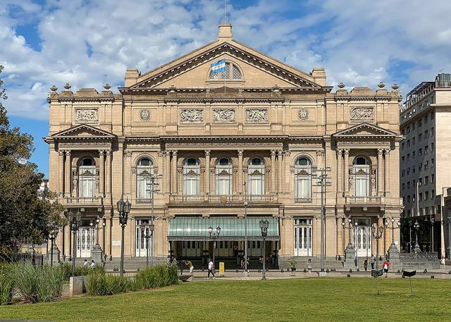
Plan
8:30–10:15Cmentarz Recoleta (codziennie 8:00–18:00; bezpłatne wycieczki po hiszpańsku w weekendy 11:00 i 15:00; opłata za wstęp – brak danych).
11:00–13:30San Telmo: niedzielny jarmark ok. 10:00–17:00 (część straganów do 18:00), Mercado de San Telmo; lunch.
14:30Plaza de Mayo i Muzeum Casa Rosada (śr–nd 11:00–18:00, ostatnie wejście 17:30, bezpłatne).
15:30Teatro Colón: zwiedzanie ok. 50 min (wg wyników Google: codziennie 10:00–16:45 co 15 min; angielskie 11, 12, 13, 15).
17:00El Ateneo Grand Splendid (Av. Santa Fe 1860): pn–sb 9–21, niedziela 11/12–21 (źródła różne), wstęp bezpłatny.
wieczórKolacja w Palermo; powrót taksówką z aplikacji.
Transport
Między atrakcjami taksówka z aplikacji lub radio-taxi: centralne punkty są od siebie ok. 15–30 min (niepotwierdzone). Czasy w planie są orientacyjne; nie spiesz się – wybierz 3–4 punkty, nie wszystkie.
Koszt (szacunek)
Teatro Colón: ogólny bilet ok. 87 zł · ARS 34 000 (cytat z wyników Google, data nieznana); Casa Rosada muzeum – bezpłatne; El Ateneo – bezpłatne; Recoleta – prawdopodobnie bezpłatna, niepotwierdzone. MALBA: cena nieznana.
Pogoda i plan B
Ulewa lub silny wiatr zamykają Rosedal (wt–nd 10–18, ostatnie wejście 17:00, sezon 22.09–21.04) i Costanera Sur. Plan B: MALBA (Av. Figueroa Alcorta 3415 – adres niepotwierdzony, w k3 „z pamięci” niepotwierdzone; śr 11–20, czw–pn 12–20; wtorek zamknięte).
Bezpieczeństwo
Wg FCDO zachowaj szczególną ostrożność w San Telmo, w Palermo, w Rezerwacie Ekologicznym, Plaza de Mayo i na Avenida de Mayo; protesty często pod Casa Rosada i Congreso – omijaj. Kanada: miejsca szczególnie narażone na kradzieże z użyciem przemocy to m.in. Recoleta Cemetery, Plaza de Mayo, Puerto Madero – tylko za dnia.
Rezerwacje
Teatro Colón – rezerwacja na oficjalnej stronie (godziny i ceny do potwierdzenia); wizyty w samej Casa Rosada: bezpłatna rezerwacja na visitas.casarosada.gob.ar, zwykle w weekendy.
Kulinaria dnia
Parrilla – Santos Manjares (Paraguay 938, w dzień) lub Don Julio (rezerwacja)
Medialunas z kawą – śniadanie przed Recoletą
Helado artesanal i dulce de leche – po spacerze
22marponiedziałek
Dzień 16: Wylot z EZE
Lot do domu
Plan
ranoWymeldowanie, transfer zarezerwowany z góry (z Palermo do EZE ok. 40 min).
lotRejs powrotny wg biletu (nocny lot, powrót do Polski ok. 23 marca). Godziny do potwierdzenia.
Transport
Taxi Ezeiza z dowolnego miejsca w CABA na lotnisko: ok. 120 zł · ARS 47 000, tylko gotówka, opłaty drogowe dodatkowe (ezeiza-airport.com, 6.10.2026) niepotwierdzone. Zarezerwowany transfer od ok. 187 zł · od ARS 73 000 · (oryginał: od USD 48).
Koszt (szacunek)
Transfer ok. 35–187 zł · ARS 14 000–73 000 · (oryginał: USD 9–48).
Pogoda i plan B
–
Bezpieczeństwo
Dzień wcześniej (21 mar) pełne zwiedzanie bez żadnych lotów to celowy bufor na strajk lub opóźnienie. Taksówki bez naganiaczy.
Rezerwacje
Odprawa online, kontrola lotniska i godziny lotu na 24–48 h przed.
Kulinaria dnia
Medialunas z kawą – krótkie śniadanie
Noclegi
Oceny pochodzą z Booking.com oraz drugich platform tam, gdzie je sprawdzono. Ceny to migawki z 21.10.2026 dla podanych dat; nie są ofertą. Żadnych ocen ani cen nie uzupełniono z pamięci: „nieznana” znaczy, że źródło ich nie podało.
Ceny w Bariloche dotyczą 18–23 marca, nie 15–20 marca. Dla właściwego terminu pobytu ceny nie były sprawdzane.
Buenos Aires (noce 8–9 mar oraz 20–22 mar)
Wyszukiwanie: Booking.com, 1 dorosły, 1 pokój, 20–22 mar 2027, USD, widoczna cena = suma za 2 noce, filtr: hotele 4★, ocena 8+. Dostępność: Booking pokazał „97% pasujących obiektów niedostępnych” już na te daty (21.10.2026). Ceny za 8–9 mar NIE były szukane (brak danych). Strona wyszukiwania (dostęp 21.10.2026).
Magnolia Hotel Boutique
4★ (Booking) najwyżej oceniany
Cena
Pokój standard: ok. 1 290 zł · ARS 505 000 · (oryginał: USD 331) bezzwrotnie (wcześniej 471) albo ok. 1 730 zł · ARS 679 000 · (oryginał: USD 445) z darmową anulacją do 18 mar 2027, śniadanie wliczone; ok. 642–863 zł · ARS 252 000–339 000 · (oryginał: USD 165–222) za noc.
Julián Álvarez 1746, Palermo (Soho). Subte Scalabrini Ortiz i Bulnes po 1,2 km; AEP 3,8 km (ok. 10 min); EZE 27 km (ok. 40 min) wg opisu na Booking.
Uwagi
Recepcja 24 h, możliwy transfer z lotniska, spokojna ulica (opinie: „silent and calm area”). Wg strony Booking cudzoziemcy płacący zagraniczną kartą lub przelewem i pokazujący zagraniczny paszport są zwolnieni z 21% VAT – sprawdź przy zameldowaniu (cena może to już uwzględniać). Współrzędnych brak w places.json, więc bez znacznika na mapie.
SuMa Recoleta Hotel
4★ (Booking) niepotwierdzonenajtańszy
Cena
ok. 723 zł · ARS 284 000 · (oryginał: USD 186) za 2 noce (wcześniej 298), darmowa anulacja; ok. 362 zł · ARS 142 000 · (oryginał: USD 93) za noc.
Oceny
Booking 8,1 (4 582 opinii), lokalizacja 9,5; druga platforma: nie sprawdzano.
Lokalizacja
Granica Barrio Norte i Recoleta, 1,5 km od centrum; odległość od Subte i lotnisk: nieznana.
Uwagi
Najtańszy z listy; przeczytano tylko kartę wyników wyszukiwania. Bez współrzędnych na mapie.
Casa Joseph
4★ (Booking) płatność gotówką
Cena
Studio king: ok. 1 450 zł · ARS 570 000 · (oryginał: USD 374) za 2 noce (wcześniej 498), darmowa anulacja do 18 mar 2027, bez karty; ok. 727 zł · ARS 285 000 · (oryginał: USD 187) za noc.
Charcas 4600, Palermo Soho (Booking: 4,7 km od centrum); AEP ok. 5 km; odległość do Subte nieznana (na liście „blisko metra”).
Uwagi
Dach z basenem, recepcja 24 h, aneks kuchenny. Uwaga: obiekt deklaruje płatność wyłącznie gotówką. Bez współrzędnych na mapie. Rekomendowany jako zapas dla Magnolii.
Dazzler by Wyndham Polo
4★ (Booking) niepotwierdzone
Cena
ok. 1 370 zł · ARS 538 000 · (oryginał: USD 353) za 2 noce (wcześniej 441), śniadanie wliczone, darmowa anulacja; ok. 688 zł · ARS 270 000 · (oryginał: USD 177) za noc.
Oceny
Booking 8,9 (1 741), lokalizacja 9,3; druga platforma nie sprawdzana.
Lokalizacja
Palermo, 5 km od centrum; blisko metra wg listy Booking, dokładnie: nieznane.
Uwagi
Przeczytano tylko kartę wyników wyszukiwania.
Fierro Hotel
4★ niepotwierdzone
Cena
Cena za 20–22 mar: nieznana (nie pojawiła się w wynikach).
Oceny
Booking 9,6 (259) wg fragmentu wyników Google; Expedia 9,8 (1 005) z wcześniejszej rundy; Google 4,7/5 wg „AI overview” (niepotwierdzone).
Lokalizacja
Soler 5862, Palermo Hollywood; krótki spacer do stacji Ministro Carranza wg przeglądu AI (niepotwierdzone).
Uwagi
Wady wg przeglądu AI: hałas między piętrami, mały basen zanurzeniowy (niepotwierdzone).
Recepcja 24 h, sejf w pokoju. Nazwa w OSM („Casasur Bellini”) może nie oznaczać tego obiektu, więc bez znacznika na mapie.
Uwagi
Nie weryfikowano w przeglądarce.
Rekomendacja robocza: Magnolia (najwyżej oceniana, spokojna ulica, elastyczna stawka ok. 863 zł · ARS 339 000 · (oryginał: USD 222) za noc); zapas: Casa Joseph. Na noc 8 mar wybierz stawkę z darmową anulacją, w tej samej okolicy.
El Calafate (noce 9, 10 i 14 mar – 3 noce)
Wyszukiwanie: Booking.com, 1 dorosły, 9–11 mar 2027 (2 noce), EUR, cena = suma za 2 noce / 2, z podatkami, filtr 4–5★. Tylko ok. 4–10% obiektów było dostępnych (5 miesięcy przed terminem), więc ceny są obciążone dostępnością i prawdopodobnie wyższe niż zwykle. Nocy 14 mar nie sprawdzano – w budżecie przyjęto dla niej tę samą cenę za noc co dla 9–11 mar (założenie). Strona wyszukiwania (dostęp 21.10.2026).
Mirador del Lago Hotel
4★ (Booking) polecany
Cena
ok. 951 zł · ARS 373 000 · (oryginał: EUR 218) za noc (435/2).
Oceny
Booking 9,0 (1 021); Tripadvisor 4,4/5; Logitravel 8,8/10 (1 933); Expedia 9,0 (495); opinie nawet z maja 2026.
Lokalizacja
1,2 km od centrum. Chwalone: czystość, obsługa, śniadanie, widok na jezioro. Skargi: małe pokoje, hałas z pobliskiej budowy.
Uwagi
Rekomendowany w badaniach. Nazwa w OSM: „Mirador del Lago Apart Hotel” – prawdopodobnie ten sam obiekt, do weryfikacji.
Hostería Los Hielos
4★ (Booking) polecany
Cena
ok. 559 zł · ARS 219 000 · (oryginał: EUR 128) za noc (256/2).
2,9 km od centrum. Plus: widok na jezioro, obsługa; minus: śniadanie, stosunek ceny do jakości, jedna skarga na ciepłą wodę (Trip.com 7,3/23).
Ayres de Calafate
4★ (Booking)
Cena
ok. 829 zł · ARS 325 000 · (oryginał: EUR 190) za noc (381/2).
Oceny
Booking 9,4 (152); druga platforma: nieznana.
Lokalizacja
1,3 km od centrum.
Uwagi
Brak w OSM/Nominatim – bez znacznika na mapie.
Esplendor by Wyndham
4★ (Booking)
Cena
ok. 1 050 zł · ARS 412 000 · (oryginał: EUR 241) za noc.
Oceny
Booking 8,9 (837); druga platforma: nieznana.
Lokalizacja
0,7 km, najbliżej centrum.
Uwagi
Av. Perón 1143 wg OSM.
Trzecia noc (14 mar): najprościej zostać w tym samym obiekcie co 9–10 mar, bez przepakowywania; rozważ Mirador del Lago (polecany, 1,2 km od centrum) albo Hostería Los Hielos (tańsza, 3,3 km od centrum – dalej od terminalu i taksówka rano na lotnisko). Zamów 3 noce w jednym obiekcie lub osobną rezerwację na 14 mar z darmową anulacją; ceny wyszukano tylko dla 9–11 mar. Bezpieczeństwo nocne: brak konkretnego źródła; normalny wybór to okolica centrum i Av. Libertador (niepotwierdzone). Opinie poza Mirador del Lago: nieznana świeżość.
El Chaltén (noce 11–13 mar – 3 noce)
Wyszukiwanie: Booking.com, 1 dorosły, 12–14 mar 2027 (2 noce; w nowym planie dotyczą nocy 12 i 13 mar, nocy 11 mar nie sprawdzano), EUR, cena = suma za 2 noce / 2. Filtr 4★ zwrócił tylko 8 obiektów, wszystkie typu apartament (nie hotele); obiekty typu hotel (19) to głównie klasa 3★. Strona wyszukiwania (dostęp 21.10.2026).
Uwaga. W El Chaltén nie ma prawdziwych hoteli 4★. Poniższe obiekty to najlepiej oceniane alternatywy i są oznaczone jako „poniżej 4★”, o ile źródło nie mówi inaczej. Kategoria oficjalna w Argentynie nie była weryfikowana; „gwiazdki” to tag platformy.
Kau Si Aike (Hostería)
4★ wg filtra Booking, ale Travelocity: 3★ (sprzeczność klas) klasa niejasnapolecany
Cena
ok. 659 zł · ARS 258 000 · (oryginał: EUR 151) za noc (302/2), śniadanie, darmowa anulacja.
Po stronie Fitz Roy (Frommer's); odległość nieznana.
Uwagi
Bez współrzędnych.
Posada San Antonio
poniżej 4★ poniżej 4★
Cena
ok. 384 zł · ARS 151 000 · (oryginał: EUR 88) za noc (176/2; pokój w stylu dormitorium).
Oceny
Booking 9,0 (556).
Lokalizacja
400 m od centrum.
Desierto Suites
apartament/hotel, klasa niezweryfikowana poniżej 4★
Cena
ok. 406 zł · ARS 159 000 · (oryginał: EUR 93) za noc (pokój 1-os., 186/2).
Oceny
Booking 8,6 (831).
Lokalizacja
100 m od centrum.
Wszystkie obiekty leżą 0,1–1 km od centrum; miasteczko jest oceniane jako bezpieczne (travelsafe-abroad), oświetlenie ulic – niepotwierdzone.
San Carlos de Bariloche (noce 15–19 mar)
Wyszukiwanie: Booking.com, 1 dorosły, 18–23 mar 2027 (5 nocy), NIE 15–20 mar, USD, klasy 4+5, z podatkami; cena = suma za 5 nocy / 5. Booking pokazał „97% pasujących miejsc już niedostępnych”. Dla właściwych dat 15–20 mar ceny mogą być inne. Strona wyszukiwania (dostęp 21.10.2026).
Uwaga. Ceny z 18–23 mar nie dotyczą terminu 15–20 mar, więc traktuj je jako orientacyjny poziom, nie jako ofertę.
Hotel Cristal
4★ (Booking) polecany
Cena
ok. 544 zł · ARS 214 000 · (oryginał: USD 140) za noc (702 za 5 nocy, wcześniej 1 170), śniadanie wliczone.
Oceny
Booking 8,6 (1 030; lokalizacja 9,6); Expedia 8,4 (394, stan z końca 2024); Trip.com 8,3 (41).
Lokalizacja
450 m od centrum – spacerem, więc najbezpieczniej wieczorem (moja inferencja). Bez parkingu. OSM: „Apart Hotel Cristal”, Mitre 355.
Uwagi
Rekomendowany z Huinid.
Huinid Bustillo Hotel & Spa
4★ (Booking) polecany
Cena
ok. 556 zł · ARS 218 000 · (oryginał: USD 143) za noc (713 za 5 nocy), śniadanie wliczone.
2,4 km od centrum. Skarga: zamknięty basen/budowa (streszczenie Wanderlog).
Radisson Blu Bariloche
4–5★ (Booking) premium
Cena
ok. 1 100 zł · ARS 430 000 · (oryginał: USD 282) za noc (1 410 za 5 nocy), śniadanie, darmowa anulacja.
Oceny
Booking 9,5 (424); Kayak 9,5 (237).
Lokalizacja
1,1 km, centralnie. Skargi: hałas z ulicy, skromne śniadanie.
Uwagi
Opcja premium. Brak w OSM/Nominatim – bez znacznika na mapie.
Inne zauważone
różne
Cena
NH Bariloche Edelweiss ok. 933 zł · ARS 366 000 · (oryginał: USD 240) (Booking 7,8 / 850, 250 m); Sheraton ok. 891 zł · ARS 349 000 · (oryginał: USD 229) (7,8 / 498); Nido del Cóndor 9,0 / 865 (6,5 km); Hotel Tunquelen (Llao Llao, 20 km) ok. 583 zł · ARS 229 000 · (oryginał: USD 150) (8,5 / 129).
Lokalizacja
Okolica Llao Llao jest malownicza, ale odosobniona – potrzebny autobus 20 lub samochód.
Rekomendacja robocza: centrum (Cristal) albo Bustillo km 2–3 (Huinid), dla solo i z dostępem autobusem.
Kulinaria
Jak traktować oceny. Oceny i liczby opinii restauracji pochodzą z agregatora Wanderlog (pokazuje liczby z Google i Tripadvisora), z nieznaną datą migawki. Nie sprawdzano aktualności opinii (ostatnie 12 miesięcy), higieny ani bezpieczeństwa nocnego okolic – zweryfikuj w Mapach Google przed wizytą. Miejsca oznaczone w źródle jako zamknięte lub tymczasowo zamknięte pominięto.
Dziesięć rzeczy do spróbowania
Cordero patagónico al asadorjagnięcina z ognia, ikona Patagonii
Czekolada z BarilocheMamuschka, Rapanui, do tego gorąca czekolada
Picada z ciervo i jabalí ahumadoswędzony jeleń i dzik
Truchapstrąg świeży lub wędzony
Bife de chorizona parrilli, najlepiej w ruchliwym lokalu
Empanadastanie i dobre na szlak
Provoletagrillowany ser provolone
Lody i dżem z calafatew marcu owoce mogą być już po sezonie
Piwo rzemieślniczeCalafate, Chaltén, Bariloche
Alfajores z dulce de lechekioski; przekąska na szlak
Buenos Aires
Dania i produkty
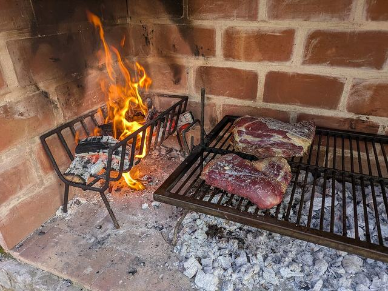
Parrilla / asado
Wołowina z grilla na drewnie lub węglu (bife de chorizo, ojo de bife, entraña). Zamawiaj „jugoso” lub „a punto”; jedna porcja wystarczy na osobę, lunch bywa tańszy. Wybieraj ruchliwe lokale.
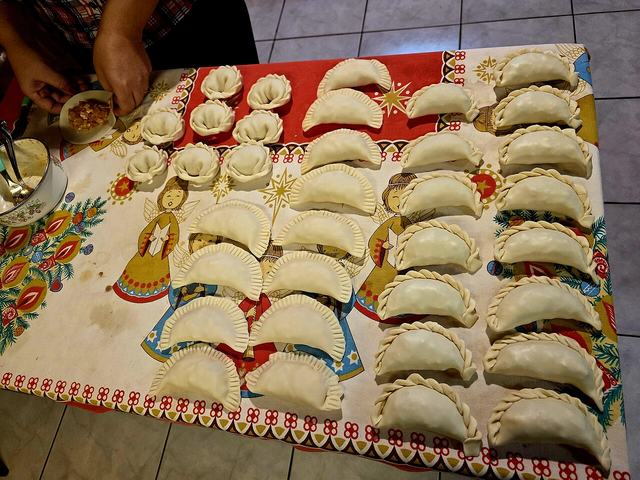
Empanadas
Pieczone (al horno) lub smażone pierogi: carne cortada a cuchillo, szynka z serem, humita. Orientacyjnie ok. 16–27 zł · ARS 6 100–11 000 · (oryginał: USD 4–7) za 2–3 sztuki (cały region Patagonii, marzec 2026). Jedz gorące.
Provoleta
Topiony ser provolone z oregano, przystawka z parrilli; starcza za całą przystawkę dla jednej osoby.
Milanesa napolitana
Panierowany kotlet z szynką, sosem pomidorowym i serem; ogromne porcje. Słynna w La Fonda del Tío (Bariloche). Zapytaj o połowę porcji.
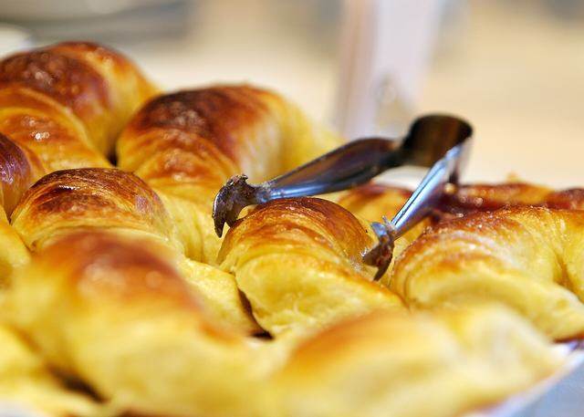
Medialunas z kawą
Małe rogaliki słodkie (de manteca) lub słone (de grasa) do café con leche lub cortado; najtańsze sensowne śniadanie.
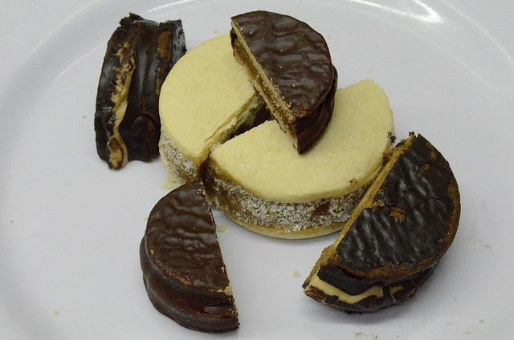
Alfajores
Dwa ciastka z dulce de leche, czekoladą lub bezą; kupisz w kioskach, dobra przekąska na szlak.
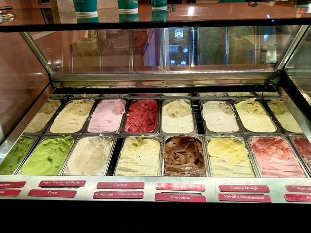
Dulce de leche i helado artesanal
Mleczny karmel i lody w stylu włoskim w smakach z dulce de leche.
Locro
Gęsty gulasz z kukurydzy, fasoli i mięsa; danie zimowe i na 25 maja – dostępność w marcu niepewna.
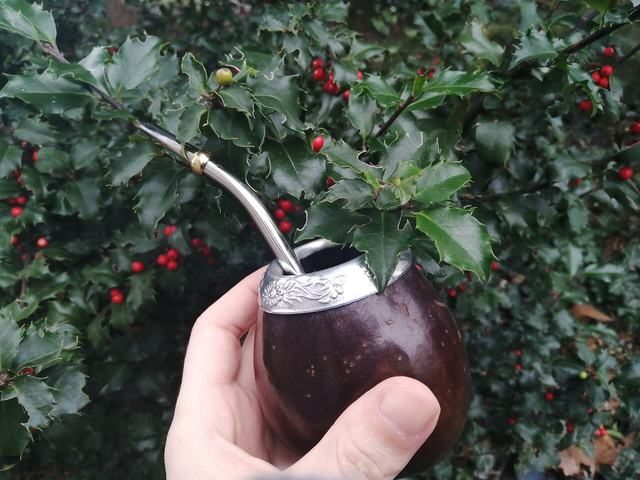
Malbec i mate
Flagowe czerwone wino i parzony napar mate. Wino na kieliszki jest tanie. Nie dziel się słomką (bombilla) z obcymi (higiena).
Choripán
Chorizo w bułce z chimichurri; street food – wybieraj stoiska z dużym ruchem.
Miejsca oceny z Wanderlog, do weryfikacji
Miejsce
Google ocena (liczba opinii)
Tripadvisor ocena (liczba opinii)
Don Julio Czołowa parrilla, Guatemala 4699 (Palermo). Rezerwuj z dużym wyprzedzeniem; po zmroku taksówka z aplikacji.
4,4 (18 484)
4,5 (12 575)
La Cabrera Parrilla, José A. Cabrera 5127 (Palermo), od 2002; wiele dodatków do mięsa.
4,4 (23 082)
4,5 (10 487)
Santos Manjares Prosty steakhouse, Paraguay 938 (okolice Retiro); zaczynał jako lokal tylko na lunch – najprościej w dzień.
4,6 (8 404)
4,5 (3 025)
Parrilla Peñaocena niepotwierdzona Tradycyjna, zatłoczona parrilla na otwartym ogniu, Rodríguez Peña 682; recenzenci wspominają darmowe empanady i chleb. Liczba opinii Google nie była widoczna.
4,5 (liczba nieznana)
4,5 (1 865)
El Calafate
Dania i produkty
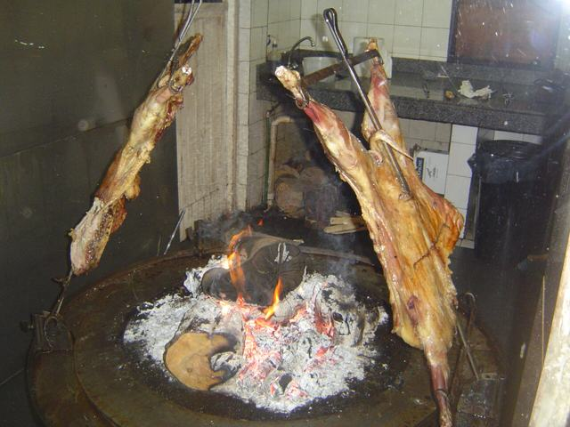
Cordero patagónico al asador
Jagnięcina rozpięta na żelaznym krzyżu i powoli pieczona przy ogniu; ikona regionu (argentina.travel). ok. 97–175 zł · ARS 38 000–69 000 · (oryginał: USD 25–45) (cała Patagonia, marzec 2026). Dobrze wypieczona, powoli pieczona – ryzyko niskie.
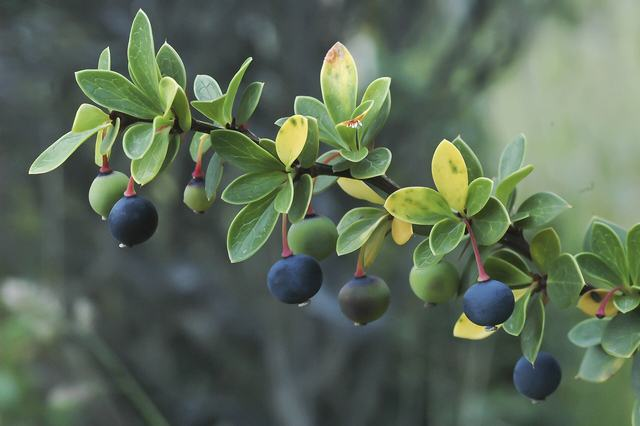
Jagody calafate
Ciemnoniebieska jagoda; legenda mówi, że kto zje calafate, wróci do Patagonii. Dżem, lody, likier. Źródła różnie podają sezon (styczeń–luty albo listopad–marzec), więc w marcu owoce mogą być już po sezonie. Nie zrywaj w obszarach chronionych.
Cazuela de cordero
Wolno gotowany gulasz z jagnięciny – tańszy sposób na spróbowanie jagnięciny (polecany w El Cucharón).
Piwo rzemieślnicze i burgery
Taproomy: La Zorra Taproom, La Parrillita del Pueblo (Chopen). Pint ok. 16–31 zł · ARS 6 100–12 000 · (oryginał: USD 4–8) (cała Patagonia).
Cocina al disco
Mięso i warzywa gotowane na dysku pługa nad ogniem w winie lub piwie; Isabel Cocina al Disco.
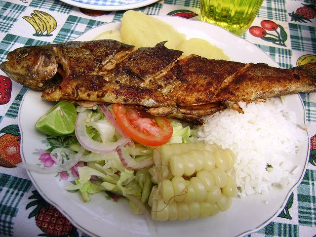
Trucha (pstrąg)
Pstrąg rzeczny i jeziorny; bardziej typowy dla Krainy Jezior, ale bywa w menu.
Czekolada i lody patagońskie
Czekoladki Ovejitas de la Patagonia; lody o smaku calafate są częste (niepotwierdzone).
Empanadas z jagnięciny
Łatwy lunch na szlak: ok. 16–27 zł · ARS 6 100–11 000 · (oryginał: USD 4–7) za 2–3 sztuki.
Miejsca oceny z Wanderlog, do weryfikacji
Miejsce
Google ocena (liczba opinii)
Tripadvisor ocena (liczba opinii)
La Tablita Parrilla; jagnięcina na okrągłym asadorze. Kilka przecznic od centrum.
4,4 (6 431)
4,1 (4 158)
Parrilla Don Pichón Grill z widokiem na miasto; bezpłatne transfery z hoteli (ułatwia wieczór).
4,5 (3 618)
4,3 (2 622)
Isabel Cocina al Disco Mięso i warzywa gotowane na dysku w winie lub piwie.
4,6 (7 399)
4,5 (3 924)
El Cucharóngodziny wg Wanderlog Gnocchi, stek, cazuela de cordero; 12–15 i 19–23 codziennie (Wanderlog). Opinia: „Great place. The food is incredible. The service is first class. Price are really good.”
4,6 (1 159)
4,2 (836)
La Zorra Taproom Browar-pub: piwo rzemieślnicze i burgery.
4,5 (6 262)
4,5 (780)
El Chaltén
Dania i produkty
Jagnięcina i pstrąg
W parrillach takich jak La Tapera i La Oveja Negra.
Piwo rzemieślnicze
Don Guerra. La Cervecería Chaltén pomijamy – oznaczona jako tymczasowo zamknięta.
Zupa z soczewicy i gulasze
Rozgrzewające dania po szlaku: Ahonikenk, Senderos.
Sorrentinos z dyni
Nadziewany makaron w Estepa Resto Bar.
Gofry
Słodkie i wytrawne w La Waflería.
Gorąca czekolada
Lokal polecany w Wanderlog jest oznaczony jako tymczasowo zamknięty – szukaj innych kawiarni na miejscu.
Lody z lokalnych owoców
Heladería Domo Blanco.
Empanadas z piekarni i viandas na szlak
Panadería Lo de Haydee; lunchbox ok. 39 zł · ARS 15 000 · (oryginał: USD 10) (bez daty).
Miejsca oceny z Wanderlog, do weryfikacji
Miejsce
Google ocena (liczba opinii)
Tripadvisor ocena (liczba opinii)
La Tapera Chatka: grillowane mięsa, domowy makaron, śniadania; José A. Rojo 50. Mała, spacerowa miejscowość.
4,6 (1 670)
4,4 (1 590)
Patagonicustylko gotówka (bez daty) Pizzeria z pokojami, Güemes 54; pizza z jagnięciną. Frommer's (bez daty): bez kart, miej gotówkę.
4,5 (837)
4,2 (550)
Ahonikenk Fonda Patagonia Zupa z soczewicy, milanesa, gulasze; Güemes 23.
4,5 (2 090)
4,3 (1 031)
Maffiarezerwacja Makarony w drewnianej chatce, rezerwuj; San Martín 76.
4,5 (1 572)
4,4 (534)
Bariloche i Kraina Jezior
Dania i produkty
Picada z wędzonego jelenia i dzika
Wędzony jeleń, dzik, pstrąg, jagnięcina i sery; deska andyjsko-patagońska. Regionalny wybór potwierdza argentina.travel.
Czekolada z Bariloche
Miasto reklamuje się jako narodowa stolica czekolady: Mamuschka (laminowana czekolada z dulce de leche, od 1988), Rapanui, Benroth.
Gęsta gorąca czekolada
Tante Frida znana z gęstej gorącej czekolady (Wanderlog).
Pstrąg świeży lub wędzony
Gwiazdorski produkt lokalny według argentyńskiej organizacji turystycznej.
Jagnięcina
Z asado, w gulaszach, wędzona lub jako farsz empanad.
Curanto
Mięso i warzywa pieczone w ziemi na rozgrzanych kamieniach; Los Curantos de Víctor Goye, Colonia Suiza.
Piwo rzemieślnicze
Długa tradycja: Blest, Manush, Haus.
Alfajores
Abuela Goye sprzedaje czekoladki, alfajores i ciasta.
Herbaciarnie
Meiling Tea House, Chiado (widok na jezioro Nahuel Huapi).
Burgery z jagnięciny lub jelenia
Bar Belek.
Miejsca oceny z Wanderlog, do weryfikacji
Miejsce
Google ocena (liczba opinii)
Tripadvisor ocena (liczba opinii)
El Boliche de Alberto Parrilla, Villegas 347; centrum.
4,6 (12 737)
4,5 (8 213)
Alto El Fuego Otwarty grill w drewnianym budynku z 1941, 20 de Febrero 451; centrum.
4,7 (5 538)
4,5 (3 937)
Rapanui Czekolada i lody, art deco, Mitre 202. Tłok – pilnuj kieszeni.
4,7 (59 148)
4,5 (6 298)
Mamuschka Laminowana czekolada z dulce de leche, Mitre 298.
4,6 (25 346)
4,5 (6 851)
Belek Burgery z jagnięciny i jelenia, Ada María Elflein 13.
4,5 (4 039)
5,0 (667)
Carnero Mały kreatywny lokal z wędzonymi mięsami, J. J. Paso 132.
4,7 (1 025)
5,0 (120)
La Fonda del Tío Milanesa napolitana, Mitre 1130.
4,6 (21 285)
4,5 (2 291)
Pominięte miejsca
La Cervecería Chaltén (San Martín 320, tymczasowo zamknięta wg Wanderlog – niepotwierdzone)
Curcuma (wegetariańska, Chaltén – tymczasowo zamknięta wg Wanderlog)
La Chocolatería Josh Aike (Chaltén – tymczasowo zamknięta wg Wanderlog)
Bar Borges & Alvarez i Premium Bar (Calafate – oznaczone jako zamknięte w Wanderlog)
Praktyczne uwagi
Napiwki i rachunek
Napiwek ok. 10% (niektóre źródła: 10–15%), w gotówce; na slipach kart często nie ma pola napiwku (landingpadba.com, flightcentre.co.uk, 21.10.2026).
Cubierto to opłata za nakrycie od osoby, nie napiwek: ok. 2–12 zł · ARS 800–4 600 · (oryginał: USD 0,50–3).
W Chaltén karty bywają nieczynne – miej peso w gotówce i pytaj „¿Se puede pagar con tarjeta?”.
Pory posiłków i ceny
Kolacja zaczyna się późno, zwykle ok. 20:30–21:00 (wiedza ogólna, nie zweryfikowana źródłem); El Cucharón w Calafate otwiera o 19:00.
Orientacyjnie w Patagonii (marzec 2026, latamtravellers): danie główne ok. 58–117 zł · ARS 23 000–46 000 · (oryginał: USD 15–30), szybki lunch ok. 31–58 zł · ARS 12 000–23 000 · (oryginał: USD 8–15), jagnięcina ok. 97–175 zł · ARS 38 000–69 000 · (oryginał: USD 25–45), pint ok. 16–31 zł · ARS 6 100–12 000 · (oryginał: USD 4–8), empanadas ok. 16–27 zł · ARS 6 100–11 000 · (oryginał: USD 4–7) za 2–3 sztuki, tygodniowe zakupy w sklepie ok. 194–311 zł · ARS 76 000–122 000 · (oryginał: USD 50–80). Ceny w konkretnych lokalach: nieznane.
Woda i higiena
Woda z kranu: nie zweryfikowano w żadnej z czterech miejscowości. W El Chaltén prasa donosiła o skażeniu z oczyszczalni ścieków w okolicy ujścia Río de las Vueltas (La Nación, listopad 2023); nie znaleziono komunikatu z 2026 r.
Nie pij nieuzdatnionej wody z rzek przy miasteczku; kupuj butelkowaną lub filtruj. Lód: nieweryfikowany, pytaj.
Wolno pieczona, dobrze wypieczona jagnięcina ma niskie ryzyko; wybieraj lokale z ruchem. Nie dziel się słomką mate.
Na szlak i dieta
Zaopatrz się w El Calafate: w Chaltén sklepy są skromne i drogie. Baton 3–5 dziennie, czekolada, kanapki z piekarni, owoce, empanady.
Opcje wegetariańskie istnieją, ale na parrillach są ograniczone: „Soy vegetariano/a”, „Sin TACC / sin gluten”. Bezglutenowo: CHIMI DELI (Bariloche, Ada María Elflein 54, ocena Google 4,6 z 5 129 opinii, menu „sin TACC”).
Budżet
Kwoty liczą się w przeglądarce ze średnich kursów NBP (waluta główna z paska „Kursy NBP” na górze; domyślnie PLN z drugą kolumną ARS); bez połączenia z NBP – po kursach awaryjnych z 21.10.2026. Lot międzynarodowy (ok. 5 200–6 500 zł · ARS 2 039 000–2 549 000 w próbkach Google Flights) jest poza tym budżetem.
Pozycja i podstawa
Status
Niski
Środek
Wysoki
A. Noclegi (14 nocy), Booking.com – wyszukano 21.10.2026
Nocleg BA 8 mar (1 noc) Brak wyszukiwania na 8–9 mar. Przyjęto widełki z cen 20–22 mar: ok. 362 zł · ARS 142 000 · (oryginał: USD 93) (SuMa) – ok. 727 zł · ARS 285 000 · (oryginał: USD 187) (Casa Joseph), środek ok. 544 zł · ARS 214 000 · (oryginał: USD 140).
ZAŁOŻENIE
362 złARS 142 000
544 złARS 213 000
727 złARS 285 000
Nocleg Calafate 3 noce (9, 10 i 14 mar) Booking 9–11 mar 2027 (2 noce): Los Hielos ok. 559 zł · ARS 219 000 · (oryginał: EUR 128), Blanca Patagonia ok. 598 zł · ARS 234 000 · (oryginał: EUR 137), Mirador del Lago ok. 951 zł · ARS 373 000 · (oryginał: EUR 218) za noc; ceny obciążone dostępnością. Nocy 14 mar nie szukano – założono tę samą cenę za noc (×3). Dodatkowa noc w Calafate zastępuje jedną noc w Chaltén (poprzednio 2 + 4 noce, teraz 3 + 3).
ŹRÓDŁO + założenie
1 676 złARS 657 000
1 794 złARS 704 000
2 854 złARS 1 119 000
Nocleg Chaltén 3 noce (11–13 mar) Booking 12–14 mar (noce 12 i 13 mar): Kau Si Aike ok. 659 zł · ARS 258 000 · (oryginał: EUR 151) (klasa niejasna), De los Tres ok. 847 zł · ARS 332 000 · (oryginał: EUR 194) (poniżej 4★). Nocy 11 mar nie szukano – założono tę samą cenę (×3). Poprzednio 4 noce.
ŹRÓDŁO + założenie
1 977 złARS 775 000
1 977 złARS 775 000
2 540 złARS 996 000
Nocleg Bariloche 5 nocy Booking 18–23 mar, nie 15–20 mar: Cristal ok. 2 730 zł · ARS 1 071 000 · (oryginał: USD 702), Huinid ok. 2 770 zł · ARS 1 087 000 · (oryginał: USD 713), Design Suites ok. 3 190 zł · ARS 1 252 000 · (oryginał: USD 821) za 5 nocy.
ŹRÓDŁO (inne daty)
2 730 złARS 1 071 000
2 773 złARS 1 087 000
3 193 złARS 1 252 000
Nocleg BA 20–21 mar (2 noce), SuMa/Casa Joseph Booking 20–22 mar: SuMa ok. 723 zł · ARS 284 000 · (oryginał: USD 186) (niepotwierdzone), Casa Joseph ok. 1 450 zł · ARS 570 000 · (oryginał: USD 374) za 2 noce.
ŹRÓDŁO
723 złARS 284 000
723 złARS 284 000
1 454 złARS 570 000
Razem noclegi
7 468 złARS 2 929 000
7 811 złARS 3 063 000
10 768 złARS 4 223 000
B. Pozostałe pozycje
3 loty krajowe + bagaż rejestrowany Próbki Google Flights: EZE–FTE niski ok. 233 zł · ARS 92 000 · (oryginał: USD 60) (JetSMART) – wysoki ok. 696 zł · ARS 273 000 · (oryginał: USD 179) (Aerolíneas 11:45 z AEP); pełny zakres próbek ok. 233–1 360 zł · ARS 92 000–532 000 · (oryginał: USD 60–349), więc górna część jest poza kolumną „wysoki”; FTE–BRC ok. 968 zł · ARS 380 000 · (oryginał: USD 249) (15 mar, jedyny widziany lot); BRC–EZE ok. 191–447 zł · ARS 75 000–175 000 · (oryginał: USD 49–115); 3 bagaże ok. 331–389 zł · ARS 130 000–153 000 · (oryginał: USD 85–100) (prasa). Taryfa nierezydenta niepotwierdzona.
ŹRÓDŁO + założenie
1 723 złARS 676 000
2 112 złARS 828 000
2 501 złARS 981 000
Opłaty parkowe (Los Glaciares + Nahuel Huapi) Stawki od 1.06.2026: Flexipass Los Glaciares 3 dni ok. 255 zł · ARS 100 000 / 7 dni ok. 448 zł · ARS 175 500; Nahuel Huapi 3 dni ok. 179 zł · ARS 70 000. Flexipass na 3 dni zakłada 3 dni w parku Los Glaciares (11–13 mar w Chaltén; opłata za 11 mar i za 10 mar w Perito Moreno nie sprawdzona). Stawka „General” – zakładamy, że dotyczy cudzoziemców; do potwierdzenia. Wartość „wysoki”: założenie +40% do 2027 (domysł). Cena biletu na szlaki Chaltén: nieznana.
ŹRÓDŁO + założenie
434 złARS 170 000
626 złARS 245 500
876 złARS 343 700
Wycieczki i wstępy (Isla Victoria, dojazd do lodowca, bilety) Szacunek z raportu K3 (800–1 500 zł · ARS 314 000–588 000). Minitrekking (od ok. 816 zł · od ARS 320 000, czyli ok. 816–979 zł · ARS 320 000–384 000 w cenach 2026) wchodzi tylko w górną część.
ZAŁOŻENIE
800 złARS 314 000
1 150 złARS 451 000
1 500 złARS 588 000
Transfery i autobusy Autobus Calafate–Chaltén ok. 121–175 zł · ARS 47 000–69 000 · (oryginał: USD 31–45) ×2 (11 mar tam, 14 mar z powrotem; w poprzednim planie powrót był 15 mar, więc liczba przejazdów bez zmian; inne źródła podają ok. 61–140 zł · ARS 24 000–55 000, patrz dni 5 i 8), taxi FTE ok. 92 zł · ARS 36 000 ×2 (9 i 15 mar), EZE ×3 (ok. 31–35 zł · ARS 12 000–14 000 · (oryginał: USD 8–9) autobus do ok. 187 zł · ARS 73 000 · (oryginał: USD 48) transfer), Linea 72 ×2; ceny autobusów miejskich w Bariloche nieznane. Kwota w zł jest założeniem projektu.
ŹRÓDŁO + założenie
550 złARS 216 000
925 złARS 363 000
1 300 złARS 510 000
Wyżywienie (14 dni) 150–250 zł · ARS 59 000–98 000 dziennie (szacunek K1/K3); wskaźniki: danie główne ok. 58–117 zł · ARS 23 000–46 000 · (oryginał: USD 15–30), szybki lunch ok. 31–58 zł · ARS 12 000–23 000 · (oryginał: USD 8–15) (Patagonia, marzec 2026).
ZAŁOŻENIE
2 100 złARS 824 000
2 800 złARS 1 098 000
3 500 złARS 1 373 000
Ubezpieczenie (trekking, ewakuacja) Szacunek, bez ofert.
ZAŁOŻENIE
150 złARS 59 000
250 złARS 98 000
350 złARS 137 000
RAZEM (bez lotu międzynarodowego)
13 225 złARS 5 186 000
15 674 złARS 6 147 000
20 795 złARS 8 155 000
Kursy. Przeliczenia używają średnich kursów referencyjnych NBP (api.nbp.pl): USD i EUR z tabeli A (publikowanej w dni robocze), ARS z tabeli B (publikowanej raz w tygodniu, w środy). Kurs ARS ma niewiele cyfr znaczących (0,00255 zł za 1 ARS), więc błąd zaokrąglenia to ok. 1–2%. To kursy średnie, a nie ceny kupna i sprzedaży: faktyczne kursy kart, bankomatów i kantorów będą inne (spread, prowizje). Pozycje w kolumnach i sumy przeliczają się na bieżąco po zmianie kursów lub waluty głównej; pozycje, których kwota w zł była założeniem projektu, pozostają w PLN. Kwoty bez „ok.” są podane w oryginalnej walucie źródła.
Wpływ zmiany planu 11–15 mar. Dodatkowa noc w El Calafate (14 mar) zastępuje jedną noc w El Chaltén (Calafate 3 noce zamiast 2, Chaltén 3 zamiast 4). Przejazdy autobusem Calafate–Chaltén to nadal dwa (11 mar i teraz 14 mar zamiast 15 mar), więc pozycja transferów się nie zmienia. Sumy: niski 13 225 zł · ARS 5 186 000, środek 15 674 zł · ARS 6 147 000, wysoki 20 795 zł · ARS 8 155 000 (poprzedni plan, po dawnym przeliczeniu ARS: niski 13 321 zł, środek 15 731 zł, wysoki 20 686 zł). Podział środka wg statusu: ŹRÓDŁO: 723 zł · ARS 284 000 · ŹRÓDŁO (inne daty): 2 773 zł · ARS 1 087 000 · ŹRÓDŁO + założenie: 7 434 zł · ARS 2 915 000 · ZAŁOŻENIE: 4 744 zł · ARS 1 860 000.
Jak czytać wynik
Status ŹRÓDŁO oznacza, że liczba pochodzi z podanego wyszukiwania lub artykułu z datą. ZAŁOŻENIE to mój szacunek bez źródła cenowego. Pozycje mieszane mają oba składniki.
Kolumny „niski” i „wysoki” zbierają wszystkie dolne albo górne wartości naraz, więc to skrajności (13 225 zł · ARS 5 186 000 i 20 795 zł · ARS 8 155 000), mało prawdopodobne jako całość. Środek (15 674 zł · ARS 6 147 000) leży w zakresie roboczym.
Zakres roboczy do planowania
ok. 14 500–16 500 zł · ARS 5 686 000–6 471 000
To kwota planistyczna przyjęta w założeniach projektu, a nie suma kolumn ani wynik przeliczenia. Zakłada nocleg w klasie 4★ (w Chaltén najlepsze dostępne, poniżej 4★) i wydatki środkowe; środek tabeli (15 674 zł · ARS 6 147 000) mieści się w nim. Równowartość w ARS (i innych walutach) pokazuje przelicznik kursów.
Z Magnolią w Buenos Aires założenie projektu to ok. 15 400–16 000 zł · ARS 6 039 000–6 275 000. Uwaga: Magnolia za 2 noce kosztuje ok. 1 290–1 730 zł · ARS 505 000–679 000 · (oryginał: USD 331–445), a SuMa ok. 723 zł · ARS 284 000 · (oryginał: USD 186), czyli o 564–1 008 zł · ARS 221 000–395 000 więcej. Po dodaniu tej różnicy do środka tabeli wychodzi 16 238–16 682 zł · ARS 6 368 000–6 542 000, czyli górny skraj zakresu lub nieco powyżej. Aby zmieścić Magnolię w 16 000 zł · ARS 6 275 000, trzeba oszczędzić gdzie indziej (tańsze noclegi w Calafate i Bariloche, bez minitrekkingu).
Największa niewiadoma to noclegi. Ceny w ARS wzrosną do 2027 (inflacja). Cena biletu na szlaki w Chaltén, transfery w Bariloche i wycieczki nie mają wiarygodnych kwot.
Bezpieczeństwo
Argentyna jest oceniana jako kraj o poziomie ostrożności normalnym; największe ryzyko to drobne kradzieże, a nie przemoc wobec turystów. Poniższe dane są migawką z 21.10.2026 – wróć do nich 2–3 tygodnie przed wyjazdem.
Oficjalne ostrzeżenia
Organ
Ocena
Data
Uwagi
Polska, MSZ (profil w Odyseuszu)
Poziom 1: „Zwykła ostrożność”
aktualizacja 30.06.2026
Przestępczość w dużych miastach wyższa niż w Polsce; najbardziej zagrożone miejsca turystyczne, dworce, lotniska, komunikacja i biedne dzielnice, zwłaszcza po zmroku. Typowe: kradzieże kieszonkowe, zrywanie toreb z motocykli, kradzieże z aut, oszustwa z dekoncentracją, odurzanie w celu kradzieży. Ubezpieczenie nieobowiązkowe, ale zdecydowanie zalecane (wizyta u lekarza prywatnego ok. 272 zł · ARS 107 000 · (oryginał: USD 70)). Strona gov.pl bywa niedostępna dla narzędzi; sprawdź osobiście: odyseusz.gov.pl/AR.
Wielka Brytania, FCDO
Brak ostrzeżenia „advise against”
strona główna z 7.05.2026, „nadal aktualna” 21.10.2026
Protesty częste (Congreso, Casa Rosada) – unikać. Złodzieje w komunikacji i na dworcach, zrywanie telefonów, „mustard scam”. Szczególna ostrożność: Palermo, okolice jarmarku San Telmo, La Boca poza Caminito, Rezerwat Ekologiczny, Retiro, Florida, 9 de Julio, Avenida de Mayo. Kradzieże z aut częste w Bariloche. Śmigłowcowa akcja ratunkowa zwykle na koszt turysty.
Kanada
„Normalne środki ostrożności”, ale „wysoki stopień ostrożności” w Wielkim Buenos Aires
aktualizacja 14.10.2026
Wskazuje m.in. La Boca, Plaza de Mayo, Recoleta Cemetery, Puerto Madero, Congreso, Florida; unikać po zmroku. Zaleca nie chodzić samotnie po górach i korzystać z licencjonowanych przewodników przy aktywnościach.
USA, Departament Stanu
Poziom 1: „Exercise normal precautions”
wydane 10.07.2026
do potwierdzenia strona niedostępna dla narzędzia (blokada), dane z podsumowania wyszukiwarki.
Niemcy, Auswärtiges Amt
Poziom bezpieczeństwa „alto” (podniesiony 28.02.2026)
strona bez daty
niepotwierdzone jedno źródło (podsumowanie wyszukiwarki): więcej policji, możliwe kontrole i opóźnienia na lotniskach i granicach; częste strajki i „piquetes”.
Przestępczość i oszustwa
Zasady dla osoby podróżującej solo
Telefon schowany na ulicy, szczególnie na krawężniku; torba z przodu; bez biżuterii.
Paszport w sejfie hotelowym, przy sobie kopia; mały „portfel zastępczy”.
Po zmroku taksówka z aplikacji lub radio-taxi z logo (FCDO: radio-taxi, najlepiej zamówione); unikaj naganiaczy na lotniskach i dworcach.
Bankomaty tylko wewnątrz banków i w dzień; bez kantorów „cueva” (fałszywe banknoty, oszustwa).
Napad z bronią: oddaj wartościowe rzeczy (Kanada, FCDO). Porwania „ekspresowe” zdarzają się rzadko – nie wsiadaj do przypadkowych taksówek.
„Mustard scam”: ktoś Cię pobrudzi i „pomoże”, by okraść – grzecznie odmów i odejdź. Zdarza się odurzanie napojów.
Przy fałszywych resztach: licz i nazywaj nominał (blogi, niepotwierdzone oficjalnie).
Kradzieże z aut: nic w zaparkowanym aucie, także w bagażniku.
Protesty, strajki, bufory
Demonstracje przy Casa Rosada i Congreso bywają gwałtowne; blokady dróg – nigdy ich nie przekraczaj.
Strajk generalny 19.02.2026: Aerolíneas odwołały 255 lotów (ok. 31 000 pasażerów), JetSMART wszystkie loty tego dnia; stanęły też pociągi i metro. Strajk kontrolerów lotu ogłoszono na 21.04.2026 (jedno źródło; wynik nieznany); strajki kontrolerów były też w czerwcu i sierpniu 2025. W sierpniu 2026 rząd wznowił rozmowy ze związkami, by uniknąć kolejnych strajków.
Na marzec 2027 nic nie ogłoszono (nie da się wiedzieć). Podstawowa częstość: 1–2 zakłócenia rocznie – stąd bufory 13 mar (rezerwa w Chaltén), 19 mar i 21 mar oraz brak ciasnych przesiadek.
Flybondi w styczniu 2026: 18% lotów odwołanych, 52,4% opóźnionych; Aerolíneas i JetSMART ok. 2% niezgodności. Na odcinki patagońskie wybieraj Aerolíneas.
Zdrowie
Choroby i szczepienia
Dengue i chikungunya: sezon 2025/26 był niski (ok. 67–71 potwierdzonych laboratoryjnie; biuletyn z 27.07.2026: 2 925 potwierdzonych i prawdopodobnych, 96% na północnym zachodzie), ale marzec to szczyt sezonu i ryzyko zmienia się z roku na rok. W Buenos Aires i Patagonii jest niższe niż na północy. Repelent z 20%+ DEET (lub piktarydyna, IR3535, PMD), klimatyzowane pokoje. Dane niepotwierdzone w pełnym biuletynie. Chikungunya: ok. 2 785 przypadków do 24. tygodnia 2026, głównie północny zachód.
Żółta febra: dla tej trasy niepotrzebna. CDC zaleca szczepienie tylko dla Corrientes i Misiones; nie jest wymagana do wjazdu. MSZ wspomina o rejonach przy granicy z Paragwajem i Brazylią.
Wysokość: nieistotna na tej trasie (najwyższy punkt planu: Pico Turista 2 060 m, opcjonalnie). Choroba wysokościowa dotyczy Puny, Jujuy i Mendozy.
Hantawirus: sezon 2025/26 – 102 potwierdzone przypadki w kraju (w tym Río Negro), śmiertelność ok. 31% (jedno źródło, niepotwierdzone). Ryzyko dla turysty bardzo niskie; przewietrz zamknięte chatki z odchodami gryzoni przed spaniem.
Szczepienia (CDC): rutynowe z MMR, WZW A zalecane, WZW B poniżej 60 lat, rozważ dur brzuszny i wściekliznę w szczególnych sytuacjach. Konsultacja w poradni medycyny podróży na 6–8 tygodni przed wyjazdem (GIS: ogólnie, bez sekcji o Argentynie).
Opieka dobra w Buenos Aires, ograniczona poza nim. W El Chaltén jest tylko punkt zdrowia; poważne przypadki jadą do El Calafate. Prywatne szpitale często żądają natychmiastowej płatności. Karta EKUZ nie obowiązuje.
Ubezpieczenie: koszty leczenia (nieograniczone lub min. ok. 1 309 230–2 182 050 zł · ARS 513 424 000–855 706 000 · (oryginał: EUR 300 000–500 000)), ewakuacja medyczna i repatriacja, akcja ratunkowa w górach i śmigłowcowa, pomoc 24 h po hiszpańsku lub angielsku, gwarancja płatności, brak wyłączenia dla trekkingu bez przewodnika; sprawdź, czy obejmuje wędrówki niewymagające sprzętu technicznego poniżej 3 500 m.
Rezolucja 1066/2026 (Boletín Oficial 11.08.2026, obowiązuje od 12.08): cudzoziemcy bez stałego pobytu muszą okazać ubezpieczenie zdrowotne albo zapłacić z góry za planową opiekę w szpitalach krajowych; przypadków nagłych nie wolno odmówić ani opóźnić. Źródło: kilka serwisów prawniczych i prasowych, nie sam Boletín Oficial. Czy ubezpieczenie jest sprawdzane na granicy: niepotwierdzone (blogi z 2025 piszą, że tak; nie potwierdzono w tekście oficjalnym). Zabierz wydruk polisy.
Śmigłowiec ratunkowy to koszt turysty; za nierejestrowane akcje w Nahuel Huapi nakładano kary.
Szlaki i góry
Los Glaciares i El Chaltén
Rejestracja wejść w rejony odległe: w Centro de Visitantes (przed miasteczkiem) lub online. Wejścia na szlaki Chaltén przez trzy portale (Los Cóndores, Base Fitz Roy, Río Eléctrico) wymagają biletu kupionego online w APN, pokazywanego cyfrowo; termin zakupu nieznany.
Zakazy: ognisk w Zonie Norte, zwierząt, dronów. Buty z usztywnieniem kostki; woda, jedzenie, ciepła warstwa, czołówka; wróć przed zmrokiem; idź z towarzyszem (zalecenie parku – solo to Twoja decyzja).
Laguna Toro: rejestracja obowiązkowa, szlak niezaznaczony – nie na pierwszy dzień solo. Cerro Solo (2 121 m) to wspinaczka lodowcowa, nie wędrówka – poza planem.
Przewodnik nie jest obowiązkowy na głównych szlakach (Fitz Roy, Torre, Pliegue Tumbado) według źródeł; brak oficjalnego zapisu, więc to wniosek z braku zakazu.
Ryzyka w El Chaltén
Wiatr i nagła zmiana pogody; stromy i odsłonięty ostatni odcinek do Laguna de los Tres – nie wchodź w silnym wietrze, śniegu, lodzie, przy złej widoczności ani późno.
Przeprawy przez rzeki po deszczu; zamknięcia szlaków z powodu pożarów, powodzi, mostów, lodu i akcji ratunkowych – sprawdzaj w Centro de Visitantes każdego dnia.
Brak sygnału komórkowego na szlakach; mapy offline, power bank, najlepiej komunikator satelitarny (moja rekomendacja). Powiedz w hotelu, kiedy wrócisz.
Ratownictwo oparte na radiu i wolontariuszach; długie czasy ewakuacji. Broszura APN (2017, może być nieaktualna): tel. +54 9 2966 15383599, VHF 150.395 / 155.135.
Przestępczość w miasteczku niska („napady wyjątkowo rzadkie”, travelsafe-abroad).
Nahuel Huapi i Bariloche
Rejestracja trekkingowa jest obowiązkowa, bezpłatna i trzeba przestrzegać zadeklarowanej trasy; szlaki nieujęte w rejestrze traktuj jako zamknięte. Reguła „min. 48 h wcześniej” pochodzi z jednej wiadomości z 20.01.2024 i nie ma jej na stronach oficjalnych, więc zarejestruj się z zapasem. W październiku 2025 park zmienił kod QR – sprawdź aktualny formularz na stronie parku.
Park oficjalnie odradza chodzenie samotnie. Zostań na szlakach oznakowanych; wiatr zamyka szlaki; pogoda zmienia się szybko (marzec: średnio 5/16 °C).
Refugio Frey (od Catedral): za Piedritas niebezpieczny bez doświadczenia górskiego – nie solo (moja ocena). Incydenty: Frey 2022, lawina na Cerro López we wrześniu 2024 (poza sezonem), akcja ratunkowa na szlaku Frey 10.10.2026.
Pożary: sezon w Patagonii grudzień–marzec (Chubut, styczeń–luty 2026; Lago Los Manzanos 2024–25, ponad 6 400 ha); ogniska zakazane poza polami biwakowymi. Sprawdź alerty na tydzień przed wyjazdem.
19.10.2026 (Cronista, jedno źródło): oficjalny kurs Banco Nación ⟦ok. 4 zł · ARS 1 485 / 1 535⟧ (kupno/sprzedaż), „blue” ⟦1 535 / 1 555⟧; różnica ok. 1,3%; ograniczenia walutowe dla osób prywatnych zniesione w 2025. Przy takiej różnicy dawna opłacalność gotówkowego USD „po blue” prawie zniknęła.
Praktyka: karta bez prowizji walutowej, peso z bankomatów w banku w dzień (sprawdź opłaty i limity), skromna rezerwa USD/EUR w sejfie. Gotówkę powyżej ok. 38 890 zł · ARS 15 251 000 · (oryginał: USD 10 000) trzeba zgłosić.
Kursy i reguły zmieniają się w ciągu tygodni: sprawdź tydzień przed wyjazdem i na miejscu.
Wjazd i dokumenty
Obywatele Polski: bez wizy do 90 dni, jedno przedłużenie o 90 dni w Migraciones. Paszport ważny na czas pobytu (MSZ, FCDO); wtórne źródła mówią o 6 miesiącach – miej paszport ważny co najmniej 6 miesięcy po powrocie (oficjalne potwierdzenie niedostępne).
Paszportu nie stempluje się przy wjeździe; możliwe biometryczne kontrole oraz prośba o bilet powrotny i środki (Kanada). Brak ETA i opłaty wjazdowej; brak obowiązkowego formularza cyfrowego (nieznane).
Rejestracja w Odyseuszu (MSZ) zalecana; telefon dyżurny ambasady +54 11 4808 1700 (źródło wtórne).
Prawo jazdy międzynarodowe (konwencja 1949) – tylko jeśli wynajmiesz auto (np. Siete Lagos); źródła są sprzeczne co do obowiązku, więc weź.
Autobusy dalekobieżne: dzień, duże firmy, klasa premium; unikaj górskich tras nocą we mgle (wypadki w 2025). Na tej trasie autobusem jedziesz tylko Calafate–Chaltén.
Rezerwacje i checklista
Kolejność ma znaczenie: najpierw lot FTE–BRC (jedyny bezpośredni, tylko Aerolíneas), potem reszta lotów, noclegi i ubezpieczenie. Terminy „z wyprzedzeniem” to moje szacunki, jeśli źródło nie mówi inaczej. Zaznaczenia zapisują się w przeglądarce (localStorage); strona działa także bez zapisu.
Zrobione: 0 / 0
1. Najpierw (jak najszybciej)
2. W ciągu 2–3 miesięcy przed wyjazdem
3. Parki i szlaki
4. Dokumenty i wyposażenie
5. Tydzień i dwa tygodnie przed
Co jeszcze do zweryfikowania
Lista pozycji, które mają znaczenie i nie są potwierdzone w źródłach. Priorytet wysoki: sprawdź przed rezerwacją. Średni: przed wyjazdem. Niski: na miejscu lub gdy wpływ jest mały.
Priorytet wysoki (przed rezerwacją)
Potwierdź godzinę lotu FTE–BRC 15 mar (10:20–12:05, ok. 968 zł · ARS 380 000 · (oryginał: USD 249) – jedyny widziany lot; cena i godzina do potwierdzenia na aerolineas.com.ar) oraz że rozkład autobusu Chaltén → Calafate na 14 mar dociera do Calafate z zapasem. Rozkładu w tę stronę w źródłach nie ma (znane są tylko odjazdy z Calafate), więc sprawdź godziny, w tym ostatni odjazd 14 mar. (Dawny konflikt 10:20 vs poranny autobus z Chaltén rozwiązano zmianą planu: noc 14 mar w Calafate.)
Dni tygodnia lotu FTE–BRC w marcu 2027: widziano tylko 14 i 15 mar (częstotliwość nieznana; starsze dane: 3 razy w tygodniu w sezonie 2023–24; jedno źródło sugeruje 7 razy w tygodniu w 2024 – niepotwierdzone).
Taryfa nierezydenta vs rezydenta w Aerolíneas: Google nie mówi, którą pokazuje; sprawdź na aerolineas.com.ar.
Ceny noclegów Bariloche dla 15–20 mar (wyszukano 18–23 mar); ceny BA 8–9 mar, Calafate 14 mar i Chaltén 11 mar – nieszukane; Booking pokazał „97% niedostępnych”.
Klasa hoteli: Kau Si Aike (4★ na Booking, 3★ w Travelocity); oficjalne kategorie w Argentynie niezweryfikowane. Los Cerros del Chaltén (5★ wg Kayak) – niepotwierdzone.
Czy wjazd wymaga ubezpieczenia zdrowotnego (blogi tak, brak potwierdzenia oficjalnego) oraz ważność paszportu (MSZ/Migraciones: 6 miesięcy?).
Bagaż: kwoty (ok. 108 zł · ARS 42 350 / 52 030) i limit 15 kg pochodzą z prasy i blogów, nie ze strony linii; Base: tylko 3 kg bagażu osobistego. Bagaż JetSMART/Flybondi: nieznany.
Lotnisko (AEP/EZE) na każdym bilecie krajowym; rozkłady 9 i 20 mar, jedyne próbki.
Priorytet średni (przed wyjazdem)
Autobus Calafate–Chaltén (11 mar) i Chaltén–Calafate (14 mar): rozkład i cena na marzec 2027. Źródła są sprzeczne: ceny ok. 121–175 zł · ARS 47 000–69 000 · (oryginał: USD 31–45) (checkmybus, lipiec–październik 2026; FAQ: ok. 194 zł · ARS 76 000 · (oryginał: USD 50)), Rome2Rio ok. 120–140 zł · ARS 47 000–55 000 albo ok. 89–105 zł · ARS 35 000–41 000 (niedatowane), elchalten.com ok. 61 zł · ARS 24 000 + ok. 5 zł · ARS 2 000 opłaty gminnej (marzec 2024); godziny odjazdów z Calafate: Taqsa 8:00, 10:00, 12:30; Cal Tur 8:00 i 17:00; Chaltén Travel 11:00 albo 8:00, 12:00, 14:30, 18:00, 20:00 (blog).
Warunki korzystania z kafelków Esri (podkład domyślny) i OpenTopoMap – sprawdź przed publicznym udostępnieniem strony (podkład OSM działa tylko po wdrożeniu na http/https).
Buenos Aires: adres MALBA (Av. Figueroa Alcorta 3415) – w k3 oznaczony „z pamięci”, niepotwierdzony.
Perito Moreno: godziny kładek w marcu (starszy artykuł: 6:30–20:00), czy opłata ok. 64 zł · ARS 25 000 już obowiązuje, cena dojazdu/wycieczki.
Hielo&Aventura: ceny na 2027 (źródło sugeruje wzrost 30–60%, domysł), limit wieku (8–65 vs 12–60), godziny.
Chaltén: cena i termin zakupu biletu na szlaki; czy płatność QR/kartą na portalu jest możliwa; status szlaków w marcu 2027; stan skażenia wody.
Nahuel Huapi: aktualny link rejestracji, reguła 48 h, status szlaku Cerro López, nocleg i ceny w Refugio López (ceny z grudnia 2024), opłaty parkowe 2027, prace na szlaku Arrayanes.
Isla Victoria/Arrayanes: cena wycieczki i opłat (niedatowane), transport Siete Lagos (brak regularnego autobusu), cena wypożyczenia auta.
Buenos Aires: oficjalne godziny i ceny Teatro Colón (strona niedostępna), Casa Rosada, El Ateneo (niedziela 11 czy 12), cena MALBA, wejście na Recoletę; ceny transferów z EZE (ARS rosną).
Teleferyk Cerro Otto (ok. 153 zł · ARS 60 000, niedatowane), cena wyciągu na Cerro Campanario (nieznana), taryfy Linea 10/20/51 i 72 w 2027, częstotliwość Linea 72.
MSZ: tekst strony gov.pl; poziom USA (strona nieodczytana); ocena Niemiec („alto”) – jedno źródło.
Priorytet niski (na miejscu lub o małym wpływie)
Pogoda: średnie z agregatorów (Calafate 6/13 °C, Bariloche 5/16 °C, Buenos Aires 25–26 °C), brak danych SMN.
Restauracje: oceny Wanderlog bez daty migawki i bez weryfikacji świeżości; godziny tylko dla El Cucharón; kilka lokali oznaczonych jako zamknięte (pominięte); Parrilla Peña bez liczby opinii Google.
Współrzędne: nie ma ich dla Mirador de las Águilas, Ayres de Calafate, Radisson Blu (brak w OSM) oraz dla Magnolii, SuMa, Casa Joseph, Dazzler (nie były w zbiorze); CasaSur ma niedopasowaną nazwę; pozycje przybliżone (jeziora, wyspa, las, Colonia Suiza); Loma del Pliegue Tumbado to szczyt, nie początek szlaku; Cerro Catedral – środek obszaru, nie baza.
Kursy walut: NBP podaje kursy średnie (tabela A – dni robocze; tabela B z ARS – raz w tygodniu, kurs ARS z niewieloma cyframi znaczącymi, błąd ok. 1–2%); faktyczne kursy kart, bankomatów i kantorów będą inne. Oficjalny kurs ARS Banco Nación to jedno źródło prasowe. Ceny w ARS wzrosną do 2027.
Dengue: liczby różnią się między źródłami (potwierdzone vs prawdopodobne); hantawirus – jedno źródło; numery alarmowe 107 – wiedza ogólna; telefon i VHF z broszury APN z 2017 r.
Kalendarz świąt 2027 (24 mar, Wielkanoc 28 mar, „puentes” nieogłoszone): źródła wtórne.
Opłata parkowa Los Glaciares (ok. 128 zł · ARS 50 000/dzień, Flexipass): kolumna „General” zakładana jako stawka dla cudzoziemców (strona tego nie definiuje).
Loma del Pliegue Tumbado to tylko opcja na dzień rezerwowy 13 mar; współrzędne to szczyt, nie początek szlaku.